GRADEアプローチの概要
GRADEアプローチの概要
著者：Ignacio Neumann, Sue Brennan, Joerg Meerpohl, Marina Davoli, Pablo Alonso Coello, Elie Akl, Philipp Dahm, Nicole Skoetz, Jun Xia, Jan Brozek, Holger J. Schünemann
グラフィックス著者：Carlos Cuello
最終更新日：2025年11月28日
主要メッセージ
GRADEは、エビデンスの確実性を評価し、特に推奨事項の作成を支援するための方法、ツール、プロセスを提供し、医療意思決定の透明性を高めます。エビデンスの確実性は、研究デザイン、リスクオブバイアス、不一致、間接性、不確実性、公開バイアスに基づき、非常に低い、低い、中程度、高いの4段階に分類されます。Summary of Findings（SoF）テーブルやEvidence Profiles（EP）はエビデンスの統合と伝達を促進し、Evidence to Decision（EtD）フレームワークは構造化された意思決定を支援します。臨床、公衆衛生、医療システムのガイドラインで広く適用されており、新たな方法や技術を取り入れながら進化を続けています。
はじめに
GRADE（Grading of Recommendations, Assessment, Development, and Evaluation）アプローチは、エビデンスの確実性を評価し、特に推奨事項の作成における医療意思決定を支援するための構造化された枠組みを提供します。その概念的基盤は、エビデンスの役割、その確実性、文脈的要因を明確かつ透明に定義し、推奨事項の形成や意思決定に反映させる体系的なプロセスを支えます。GRADEはこの過程で判断が必要であることを認めており、判断や意見の相違を排除するのではなく、それらを明示的かつ構造化して透明性を高めます（表1参照）。また、すべての利害関係者が議論に参加することを保証します。
表1. 他のシステムと比較したGRADEの利点
- エビデンスの確実性と推奨の強さを明確に区別
- エビデンスの確実性を下げる・上げるための明確かつ包括的な基準
- 患者や人々にとっての各アウトカムの相対的重要性を明示的に考慮
- エビデンスから意思決定へ移行する構造化された枠組みと透明なプロセス
- 非常に低い確実性のエビデンスでも推奨を行う明確な助言
- 強い推奨と条件付き推奨の明確かつ実践的な解釈
- シンプルさと方法論的な堅牢性・包括性のバランス
- 推奨の適応・採用を可能にする（GRADE Adolopment）
- GRADE学習リソースが広く利用可能かつ無料でアクセス可能
- 国際的なネットワークによる支援
- 革新、改良、さらなる発展を許容
- GRADEproなどのツールによる支援
エビデンスの確実性
GRADEはエビデンスの確実性を「推定値の真の値が特定の範囲内、または意思決定の閾値の上または下にあるという確信度」と定義します。(1–3)
確実性を評価する推定値の種類はGRADEの適用分野によって異なります。介入の効果に関する質問では治療効果、患者の価値観の推定ではアウトカムの相対的重要性、診断の質問では診断戦略の効果や診断精度指標、予後評価では予測因子とアウトカムの関連指標、環境健康やリスク評価では曝露とアウトカムの関係を指します。
GRADEはエビデンスの確実性を「高い」「中程度」「低い」「非常に低い」の4段階に分類します（表2）。これらの確実性レベルは、個々の研究ではなく、各主要な質問に対して評価されたエビデンス全体に適用されます。ただし、確実性評価のためには個々の研究の評価（例：研究の制限）も必要です。
エビデンスの確実性評価の中心には「意思決定閾値」と「確実性評価の対象」という2つの重要な概念があります。意思決定閾値は効果の大きさ（例：重要でない、小さい、中程度、大きい）や関連するエビデンスの確実性に関する判断の基準となる値です。最終的には、代替案の効果のバランス判断（利益が害を上回るかなど）や代替案へのコミットメント（ある介入を推奨するかなど）にも用いられます。
確実性評価の対象は、評価される特定の関心範囲（例：中程度の利益）を指し、通常は推定値が位置する閾値の範囲や側面に対応します。
確実性評価は以下の4段階のプロセスです：
- 閾値の数を決定する
評価に用いる意思決定閾値の数を決定します。閾値はコンセンサスや実証的証拠に基づき設定され、透明に報告されるべきです。
- 確実性評価の対象を決定する
通常、推定値が位置する範囲を特定します。
- エビデンスの評価
GRADEユーザーは、研究デザインや実施に関する問題（リスクオブバイアス、不一致、間接性、不確実性、公開バイアスなどGRADEのドメイン）を体系的に評価します。用量反応効果や大きな効果は確実性を高める要因となります。
- 確実性を下げるか上げるかの判断
GRADEドメインで懸念が見つかっても、それだけで確実性を下げる理由にはなりません。確実性を下げるのは、真の効果推定値が確実性評価の対象範囲外にある合理的な疑いが生じる場合のみです。同様に、確実性を上げるには、単に強化要因があることを認識するだけでなく、交絡や偽の結果の可能性を分析し評価する必要があります。
表2 – エビデンスの確実性の4段階
| 確実性レベル | 説明 |
|---|---|
| --- | --- |
| 高い確実性 | 推定値の真の値が関心のある閾値の一方の側、または特定の範囲内にあることに高い確信がある。 |
| 中程度の確実性 | 推定値の真の値が関心のある閾値の一方の側、または特定の範囲内にあることに中程度の確信がある。真の値は確実性評価の対象範囲からやや外れる可能性がある。 |
| 低い確実性 | 推定値の真の値が関心のある閾値の一方の側、または特定の範囲内にあることに低い確信がある。真の値は確実性評価の対象範囲から外れる可能性が高い。 |
| 非常に低い確実性 | 推定値の真の値が関心のある閾値の一方の側、または特定の範囲内にあることに非常に低い確信がある。真の値は確実性評価の対象範囲から大きく外れる可能性が高い。 |
図1 – 介入効果に関するエビデンスの確実性レベルの解釈

この図は、中程度の効果に対するエビデンスの確実性の解釈を示しています。大きな効果（例：介入による大幅な減少・増加）、小さな効果（例：わずかな減少・増加）、重要でない効果（介入による重要な差がない）についても同様の解釈が可能です。
介入効果に関するエビデンスの確実性
介入に関しては、確実性評価の出発点は研究デザインであり、大きく以下の2種類に分けられます：
- ランダム化比較試験（RCT）
- 介入に関する非ランダム化研究（NRSI）または観察研究（コホート研究、症例対照研究、横断研究、症例シリーズや症例報告を含むがこれに限定されない）
介入効果の評価にはRCTが推奨されますが、特に有害事象の評価や実施の実現可能性、障壁、促進要因の検討には非ランダム化研究も重要です。RCTとNRSIの双方のエビデンスは互いに補完的で価値があります。(4)
GRADEでは、RCT由来のエビデンスは高い確実性から開始し、NRSI由来のエビデンスは通常、無作為化がないことによる交絡や選択バイアスのリスクから低い確実性で開始します。ただし、ROBINS-Iなどの厳密な評価ツールを用いてバイアスを系統的に評価した場合、NRSIも高い確実性から開始することがあります。しかし、多くの場合、中程度または高いリスクが認められ、初期確実性から2段階下げることが推奨されます。(5)
図2 – 介入の確実性評価におけるGRADEアプローチ
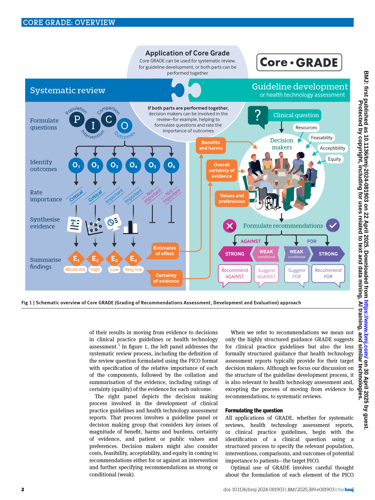
複数の研究から成るエビデンスの確実性は、ランダム化研究（RCT）であれば高い確実性、非ランダム化研究（NRSI）であれば低い確実性から開始される（AおよびB）。5つの基準で確実性を下げることができ（C）、3つの基準で上げることができる（D）。これらの判断に基づき、各アウトカムに対するエビデンス全体の最終的な確実性が決定される（E）。NRSIのリスクオブバイアスをROBINS-Iで評価する場合、初期確実性は高く設定され（オレンジの破線矢印）、その後GRADEの全基準を用いて下げたり上げたりする。
RCTおよびNRSIの確実性を下げる5つのドメイン
これらの初期評価に続き、確実性を下げる可能性のある5つのドメインに沿って詳細な評価が行われます。評価はアウトカムごとに実施され、エビデンスに含まれる個々の研究の詳細な理解が必要です。
理論的には、各GRADEドメインは確実性を1〜3段階下げる根拠となり得ますが、2段階または3段階下げる基準は不確実性以外のドメインでは完全には運用化されていません。
1. 研究デザインおよび実施の制限（リスクオブバイアス）
個々の研究の設計や実施の欠陥に起因するバイアスリスクを評価します。主な方法は、感度分析を用いて高リスク群と低リスク群の研究を比較することです。ただし、感度分析で差が見られなくても確実性を下げる場合があります。例えば、1) 無作為化が不十分な場合（非ランダムな割付）、2) 非盲検研究で研究者や評価者が参加者の予後やアウトカム測定に影響を及ぼす可能性がある場合、3) 重要な欠測データがあり、合理的な仮定で効果推定が閾値を超える場合などです。
2. 不一致
エビデンス統合に含まれる研究結果間に系統的な差異があるかを評価します。研究が1つしかない場合は不一致の懸念はありません。(6)
不一致が事前に設定した少数のサブグループ仮説で説明可能なら、GRADEユーザーはこれらの要因で層別化することができます。説明不能な不一致が残る場合は確実性を下げます。I²やCochranのp値などの統計指標が初期評価に用いられますが、最終判断は個々の研究効果と閾値との関係を検討して行います。
3. 間接性
研究結果が質問に対して適用可能か（適合性、一般化可能性、外的妥当性、翻訳可能性、移転可能性）を評価します。介入研究では対象集団、介入、比較、アウトカムの間接性を区別します。間接比較は複数の選択肢が直接比較されていない場合の特別な間接性です。
主な評価方法は、間接性の高い研究と低い研究を統計的・図示的に比較することですが、サブグループ分析で差がなくても、基準リスク推定に懸念がある場合は確実性を下げることがあります。
4. 不確実性（精度の低さ）
エビデンスのランダム誤差リスクを評価します。絶対推定値（リスク差や平均差など）の信頼区間が主な評価ツールです。信頼区間が事前設定された閾値をまたぐ場合、確実性を下げます。(3)
また、大きな効果でも参加者数やイベント数が少ない場合は、精度が不十分である可能性があり、確実性を下げることがあります。
5. 公開バイアス（ディセミネーションバイアス）
研究結果の公表・アクセス可能性が結果の性質によって左右されているかを評価します。判断は難しいですが、系統的レビューの方法、エビデンスの特徴、統計的手法が参考になります。
NRSIの確実性を上げる3つのドメイン
NRSIのエビデンスで確実性を下げる理由がない場合に限り、以下の3つのドメインで確実性を上げることが可能です。
1. 大きな効果
大きな効果が観察されると、その効果が交絡で完全に説明される可能性は非常に低いため、重要な効果の推論が強化され、確実性を1〜2段階上げることができます。
ここでの注意点は、大きな効果が観察される場合、確実性評価の対象は通常、大きな利益または害に設定されることです。確実性を上げることは、効果が実際に大きいという自信が増すことを意味するのではなく、観察された大きな効果に基づき、真の効果が重要でない範囲にある可能性が非常に低いことを意味します。
2. 用量反応勾配
大きな効果と同様に、用量反応勾配の存在はNRSIにおける因果関係の支持として長く認識されています。用量反応勾配がアウトカムレベルで観察されると、確実性を1段階上げることができます。(7)
3. 逆方向の残存交絡
交絡は通常、関連の大きさを過大評価し、因果推論を弱めますが、稀に逆方向に作用し関連の過小評価をもたらす場合があります。例えば、専門施設で治療を受ける患者は一般施設より重症度が高いことが多いですが、専門施設でより良いアウトカムが観察される場合、この差異が因果推論を強化します。
このような逆方向の交絡が合理的に考えられる場合、確実性を1段階上げることができます。
実践的助言
非ランダム化研究の交絡リスクを厳密に評価するツールを用いる場合、確実性を上げる3つのドメインは交絡リスクが中程度または低いことの追加指標としても機能します。この場合、初期確実性は高いため、これらの条件があれば確実性を下げない、あるいは通常の2段階ではなく1段階下げることが妥当です。
GRADEドメイン間の重複
エビデンスに関する懸念や観察は複数のドメインにまたがることがあります。例えば、ランダム効果モデルを用いたメタ解析の信頼区間は、研究内のばらつき（不確実性）と研究間のばらつき（不一致）の両方を反映します。研究の制限は、バイアスリスクの高低で結果が異なる場合、不一致に寄与します。用量反応勾配が観察される場合、極端な値に注目すると大きな効果も示唆されることがあります。こうした場合、同じ問題で確実性を二重に上下させないことが重要な原則です。
価値観に関するエビデンスの確実性
医療の意思決定には、介入効果のエビデンスだけでなく、介入が防止または引き起こすアウトカムの相対的重要性の理解も必要です。これは患者の価値観に関する質的・量的な一次研究、質的エビデンス統合、患者代表からの直接情報などで得られます。
量的手法には健康効用評価があり、健康アウトカムの重要度を表現できます。効用値は直接法（例：standard gamble）や間接法（例：生活の質質問票）で得られ、0（死を避ける価値）から1（完全な健康）までの範囲で個人がアウトカムや健康状態に付与する平均的価値を示します。
関連指標の不効用（1 - 効用）は直感的で、不効用が高いほど特定のアウトカムや健康状態を避ける価値が高いことを意味します。
効用値を報告する研究の確実性は高い確実性から開始しますが、RCTやNRSIの確実性を下げる5つのドメインを適用できます。ただし運用方法は異なります。(8,9)
検査利用に関するエビデンスの確実性
診断・スクリーニング検査の利益に関する最良のエビデンスは、検査と介入戦略のRCTで直接関連アウトカムを測定したものです。検査がアウトカムを改善しなければ、その精度にかかわらず使用する理由はありません。(10)
しかし、多くの場合、介入研究の直接エビデンスが不足し、診断精度研究のエビデンスを他のデータと結び付けてアウトカムへの影響を評価する必要があります。これは2段階のプロセスです。
第一段階では、診断精度研究を系統的レビューで評価し、適切ならメタ解析で統合します。診断精度を測る適切な研究デザインは観察研究であり、確実性評価は高い確実性から開始し、GRADEの基本原則と5つの確実性低下ドメインに従います。(11,12)
第二段階では、診断精度の最良推定値を、疾患の有病率、自然経過、治療効果などの他のエビデンスと結び付けます。異なるエビデンスを結び付けた推奨の場合、意思決定に重要なデータの確実性を評価し、全体の評価は最も低い確実性に基づきます。
予後および曝露に関するエビデンスの確実性
介入効果の評価と同様に、予後因子や曝露に関する質問にもGRADEを適用できます。この場合、非ランダム化研究が最適なデザインであり、介入評価時とは異なり高い確実性から開始します。リスクオブバイアス、不一致、間接性、不確実性、公開バイアスの5つのドメインでエビデンスの制限を評価し、確実性を下げることがあります。(13)
Evidence ProfilesおよびSummary of Findingsテーブル
コミュニケーションと結果提示を強化するため、GRADE作業部会は標準化された要約表を開発しました。
Summary of Findings（SoF）テーブルは様々な形式で提供されますが、コア要素は一貫しており、アウトカムの特定、介入の相対効果と95％信頼区間、絶対効果の推定、エビデンスの確実性評価を含みます。
Evidence Profile（EP）は類似情報を提供しますが、確実性ドメインの詳細な評価を含みます。SoF同様、特定のニーズに応じた複数の形式があります。(14,15)
さらに、GRADEは価値観、診断精度、予後、質的エビデンス、曝露効果に関する専門的なSoFテーブルも開発しています。
推奨事項の作成と意思決定
GRADE作業部会は、ガイドラインパネルが利用可能なエビデンスを用いて構造化かつ透明に意思決定や推奨作成を行うためのEvidence to Decision（EtD）フレームワークを開発しました。(16)
ガイドラインパネルは通常、複数のエビデンスを基に推奨を形成します。理想的には、これらは系統的レビューで収集され、EtDフレームワーク内で要約され、意思決定や推奨に活用されます。
介入のデフォルトEtDテンプレートは、介入の純効果、価値観の変動、FACE基準（Feasibility：実現可能性、Acceptability：受容性、Cost：費用、Equity：公平性）などの主要な文脈要因を統合します。
近年、複数比較のエビデンスに基づく意思決定を支援する新バージョンのEtDフレームワークも開発されています。
1つまたは複数の診断検査に関する意思決定には、検査精度のエビデンスと検査使用が患者に与える影響を明確に区別した専門的なEtDフレームワークがあります。
EtDフレームワークは柔軟であり、組織の特定のニーズに合わせて適応可能です。重要でない基準は省略でき、追加のカスタム基準も組み込めます。例えば、動物性食品の消費や温室効果ガス排出に関連する介入の推奨作成時には、惑星の健康に関する考慮を追加基準として含めることがあります。
推奨の強さ
推奨の強さは、介入実施の望ましい結果と望ましくない結果の全体的なバランスを反映します。GRADEは5種類の推奨を区別します（図3参照）。
図3 – GRADEの推奨

高または中程度の確実性エビデンスで明確な純利益が示される場合、ガイドラインパネルは介入を強く推奨することがあります。逆に、高または中程度の確実性で純害が示される場合は、介入に対して強い反対推奨が適切です。
しかし、このような明確な状況は稀です。多くの場合、介入の純効果は非常に小さい、変動が大きい、または不確実です。例えば、望ましい効果と望ましくない効果がほぼ均衡している場合、全体的な影響は集団や個人の価値観の仮定に敏感になります。さらに、エビデンスの確実性が低いまたは非常に低い場合、効果推定は信頼できず、純効果に不確実性が生じます。こうした場合は条件付き推奨が適切です。例外もありますが、それは別章で説明されています。推奨や意思決定を行う者は、たとえ非常に低い確実性のエビデンスであっても推奨を提供する努力をすべきです。推奨の利用者は、ガイドライン作成者や医療技術評価機関ほど深く検討する時間が通常ないため、答えを求めています。(17)
また、2つの積極的な代替案の比較で選択が合理的な場合には「どちらでもよい」という中間の選択肢も重要です。標準治療や無介入との比較で中間選択肢を用いるのは利用者にとって有益でなく、介入の有無を選ばせるだけで指針とは言えません。したがって、介入と比較対象が本当に同等と判断される場合にのみこの選択肢を用いるべきです。
GRADEproソフトウェア
SoFテーブルの作成からインタラクティブなEtDフレームワーク、完全なガイドライン作成までのGRADEプロセスは、GRADEproソフトウェア（www.gradepro.org）によって支援されます。Cochraneの系統的レビュー著者はSoFテーブル作成に、ガイドライン作成者は推奨作成とオンライン公開にGRADEproを利用しています。また、携帯端末向けアプリ開発にも活用可能です。
結論
GRADEはアウトカムごとおよびアウトカムを横断したエビデンスの確実性（質）を評価するアプローチを提供します。また、EtDフレームワークを用いてエビデンスから意思決定へ移行する方法も示します。GRADEの強みは、介入や質問の内容に依存しない構造化された評価枠組みと、明示的なプロセスおよび透明な判断の要件にあります。臨床から公衆衛生、医療政策まで幅広い医療介入に適用されており、GRADEが有効に適用できない状況は稀です。
GRADEアプローチは2000年代初頭の創設以来大きく進化しており、科学的方法論として、意思決定者のニーズの変化や人工知能などの新技術の統合に対応して今後も適応を続けるでしょう。
コアGRADE フローチャート
以下のフローチャートと図は、CoreGRADEシリーズ論文から抽出したものです。画像をクリックすると拡大表示されます。
図1: CoreGRADEの全体プロセス — エビデンスの確実性評価から推奨への流れ

図2: 確実性評価の4段階プロセス — 初期評価、格下げ、格上げ、最終評価

図3: 確実性の連続体 — 個別ドメインと全体的な確実性

詳細解説を読み込み中...
GRADEの開発方法
The development methods of GRADE
著者: Holger J. Schünemann, Ignacio Neumann, Sue Brennan, Joerg Meerpohl, Marina Davoli, Pablo Alonso Coello, Elie Akl, Philipp Dahm, Nicole Skoetz, Jun Xia
グラフィック著者: Carlos Cuello
最終更新日: 2025年8月14日
重要メッセージ
GRADE Working Groupは、エビデンスと推奨の評価を統一するシステムを作成し、対立するアプローチによる混乱を軽減しました。公式のGRADEガイダンスは、利害関係者の意見やシステマティックレビューを取り入れた、構造的で厳密かつ透明性の高い反復的なプロセスを通じて開発されます。GRADEシステムは新たな課題に対応するために動的に進化し、さまざまな応用分野での継続的な有用性を確保しています。
GRADE GuidanceおよびConcept Papersの開発方法
GRADEガイダンスの開発（GRADE Bookの背景）は、エビデンス、実用性、構造、包摂性、透明性の原則に基づいています。プロセスは方法論的課題の特定から始まり、エビデンスの統合、利害関係者の関与、コンセンサス形成、広範な査読を経て進化します。(1)
ガイダンスプロジェクトの開始
- トピック登録
トピックは、GWGメンバーおよび時に外部専門家からなるプロジェクトグループによって提案・登録されます。トピックは方法論の改良（例：用量反応勾配）からGRADEの新しい応用（例：教育、獣医学）まで多岐にわたります。
- Guidance Groupによる承認
提案はGRADE Guidance Groupによって精査され、GWGの目的に合致し、重複を避けることが確認されます。
- 包摂的なメンバーシップ
承認後、プロジェクトグループはGWGメンバーおよび新規参加者に開放され、多様な視点と専門知識を促進します。
方法論の開発と承認
公式のGRADE方法およびGRADE Bookの基盤となるプロセスは、以下の6つの構造化されたステップで進められます（図1参照）：
- 問題の特定
執筆グループは現実の事例をもとに主要な課題を特定し、反復的なフィードバックを通じて解決策を検討します。
- システマティックまたはスコーピングレビュー
関連する場合、既存の方法やギャップを特定するためにエビデンスをレビューします。エビデンスが不足している場合は、新規のアプローチを開発し、GRADEが未解決のニーズに対応できるようにします。
- 草稿作成
執筆グループが初期草稿を作成し、プロジェクト会議、専門家の意見、GWG全体の議論を反映させます。
- 反復的レビュー
草稿は執筆グループ、プロジェクトグループ、GWGメンバーから複数回のフィードバックを受けます。この反復プロセスにより、明確さ、関連性、方法論の厳密さが保証されます。著者資格はICMJE基準に準拠します。
- 承認プロセス
草稿はGWG会議で議論・承認されます。承認には匿名投票による80％の賛成が必要です。否決された草稿は最大3回まで改訂・再提出が可能です。
- 出版
承認された記事は最終化され、査読を経て『Journal of Clinical Epidemiology』や『Annals of Internal Medicine』などのジャーナルに掲載されます。Concept記事は追加の現場テストを経て完全なガイダンス記事に発展することがあります。
図1 - 公式GRADE GuidanceおよびConcept Papersの開発プロセス
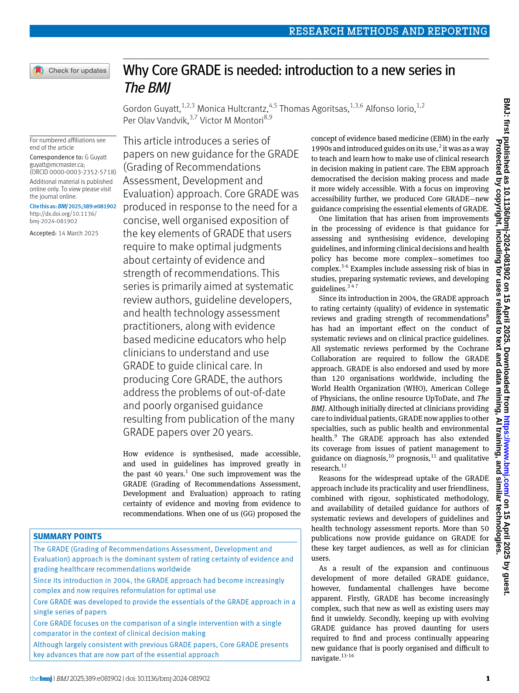
GRADEのConceptおよびGuidance論文は、GRADE Working Group内で参加型かつ厳密な多段階プロセスを通じて開発されます。すべての論文は外部査読を受け、著者資格はICMJE基準に従って決定されます。
品質とコンセンサスの確保
- 匿名投票
承認プロセスはバイアスを排除するため匿名で行われ、真の合意を反映します。
- 利害関係者の関与
包摂的なアプローチにより、新規および経験豊富なメンバーからの意見を取り入れ、多様な視点を網羅的に考慮します。
- 反復的フィードバック
否決された記事は再検討・改訂され、再提出の機会がイノベーションと継続的改善を促進します。
更新された方法の意義
利害関係者にとって
GRADEを使用すると主張する組織は、更新されたガイダンスに沿い、GRADEの原則に忠実な最低限の要件を遵守すべきです。エビデンス評価と意思決定プロセスの透明性は、GRADEに基づく推奨や決定の信頼性と有用性を維持するために不可欠です。
方法論的進展にとって
更新された方法は、エビデンス統合や研究方法論の進化する課題に対応するGRADEの適応性を反映しています。厳密かつ柔軟な枠組みを提供することで、GRADEは多様な医療環境や意思決定の文脈での関連性を保ち続けます。
GRADEおよび方法論コミュニティにとって
反復的かつ包摂的な開発プロセスはGRADEコミュニティを強化し、協力と知識共有を促進します。利害関係者が方法論の進歩に貢献できるプラットフォームを提供し、医療意思決定の世界的な整合性を促進します。
結論
GRADE Working Groupは方法論の洗練を継続し、エビデンス統合と意思決定科学のニーズに応じてガイダンスを進化させています。構造的で透明かつ包摂的なガイダンス開発アプローチは、GRADEの卓越性へのコミットメントを示しています。更新された基準に従うことで、利害関係者はGRADEの使用を自信を持って主張でき、評価と推奨が体系的かつ透明で信頼できるものとなることを保証します。
GRADEが進化する中で、その基盤となる原則—構造、包摂性、透明性—は揺るがず、エビデンス統合と医療意思決定の統一的枠組みとしての役割を果たし続けます。その詳細なプロセス記述は、この動的な分野に貢献しようとする組織や個人にとっての道標となるでしょう。
コアGRADE フローチャート
以下のフローチャートと図は、CoreGRADEシリーズ論文から抽出したものです。画像をクリックすると拡大表示されます。
図1: CoreGRADEの全体プロセス

詳細解説を読み込み中...
GRADEの使用を主張するための要件
GRADEの使用を主張するための要件
著者：Holger J. Schünemann, Ignacio Neumann, Sue Brennan, Joerg Meerpohl, Marina Davoli, Pablo Alonso Coello, Elie Akl, Philipp Dahm, Nicole Skoetz, Jun Xia
グラフィックス著者：Carlos Cuello
最終更新日：2025年11月12日
主要メッセージ
GRADE Working Groupは、証拠と推奨の評価を統一するシステムを作成し、相反するアプローチによる混乱を軽減しました。基本的なGRADEアプローチの使用を主張するには、証拠の確実性の体系的評価と意思決定に焦点を当てた7つの要件を満たす必要があります。
GRADEの背景と使用要件
Grading of Recommendations Assessment, Development, and Evaluation（GRADE）システムは、エビデンス統合の基盤であり、システマティックレビュー、臨床ガイドライン、健康関連の意思決定に広く採用されています。証拠の確実性を評価し推奨を形成するための標準化された枠組みを提供し、多様な文脈において一貫性と明確さを保証します。GRADEアプローチは利用者によって適用の厳密さに差がありますが、ここに示す要件はその基本原則、すなわちGRADEの本質的な骨格を表しています。(1)
GRADEの目的
GRADE Working Groupが構想したシステムは以下を目指しています：
- 証拠に基づく医療の基盤である元のエビデンスレベルから発展した多数の評価方法による不一致や混乱を減らすこと。(2,3)
- 意思決定における透明性と説明責任を促進すること。
- 患者、臨床医、政策立案者、研究者など医療関係者に対して明確で実行可能な指針を提供すること。
- 基本形態であれば誰でも使用可能でありながら、複雑な方法論的概念を過度に単純化しないこと。
誤用の課題
GRADEは広く採用されていますが、一部の組織がGRADEの方法を承認なしに改変し、不一致を生み出し、その基本的な目的を損なう事例があります。GRADE Working Groupはそのような「改変GRADE」実践を推奨せず、誰でも参加可能な既存のチャネルを通じて建設的な意見を歓迎しています。(4) 重点は、革新や文脈特有の適用を容認しつつもGRADEの整合性を保つことにあります。
GRADE用語
GRADEは、GRADE Working Groupによって開発された公式の方法とプロセスを指し、GRADEアプローチまたはGRADEシステムと呼ばれます。GRADE Working Groupは唯一の公式ガイダンスや概念の発信元です。2020年以降、GRADE Guidance Groupの公式承認を受けていない出版物はGRADEの参考資料として認められていません。本書は公式GRADE論文に基づいており、GRADE Guidance GroupはGRADEアプローチの妥当性に関する質問の最重要情報源です。
用語の明確化のため、GRADEでは推奨や意思決定の強さと方向性を評価する要素を「criteria（基準）」と呼び、これらの基準の包括的な考慮事項を「domains（領域）」と呼びます。例えば、8つの領域（詳細な研究デザインと実施の限界／risk of bias、精度の低さ、間接性など）がEtDフレームワークにおける証拠確実性の重要な基準を決定します。個別の項目（例：randomization concealmentはrisk of biasの一部、I²は不一致の領域の一部）は、これらの領域内で判断を下すためにGRADE利用者が考慮します。問題の優先度に関するシグナリングクエスチョンは、各基準の質問に答えるために用いられます。
基本的なGRADE使用のための要件
GRADE Working Groupは適切なGRADE使用のために7つの最低要件を示しています（表1参照）：
- 証拠確実性
証拠の確実性（quality of evidenceとも呼ばれる）は、GRADEの運用定義に従い一貫して定義されなければならない。
- 証拠確実性領域の明示的考慮
GRADEの各領域（詳細な研究デザインと実施の限界（risk of bias）、精度の低さ、不一致、間接性、出版バイアス、該当する場合は大きな効果、反対の残存する妥当な交絡、用量反応関係の3つのアップグレード領域）を証拠確実性評価時に明示的に考慮すること。
- アウトカム別評価
重要または主要なアウトカムごとに、GRADEのカテゴリー（高、中、低、非常に低）を用いて確実性を評価すること。
- エビデンス表
エビデンスはエビデンスプロファイルまたはSummary of Findingsテーブルを用いて体系的に統合・提示すること。
- 明示的な意思決定基準
推奨を行う際は、文脈的要因を含む明示的な基準に基づき、理想的にはEvidence to Decision（EtD）フレームワークで記述された基準に従うこと。
- バランスの取れた評価
意思決定者は健康効果の大きさとバランス（利益と害の両方）を説明しなければならない。
- 明確かつ実行可能な推奨
推奨は強さ（強いまたは条件付き）と方向（賛成または反対）で分類され、GRADEガイダンスに沿った定義を用いること。
表1. GRADEシステムまたはアプローチの使用を主張するための最低要件（抜粋）
| 要件 | 説明 |
|---|---|
| --- | --- |
| 証拠確実性の一貫した定義 | GRADE Working Groupの運用定義に準拠した確実性の定義 |
| 各GRADE領域の明示的考慮 | risk of bias、精度の低さ、不一致、間接性、出版バイアス、アップグレード領域の評価 |
| アウトカム別の確実性評価 | 重要アウトカムごとに高・中・低・非常に低のカテゴリーで評価 |
| エビデンス表の使用 | エビデンスプロファイルやSummary of Findingsテーブルで体系的に提示 |
| 明示的な意思決定基準 | EtDフレームワークに基づく基準の明示的適用 |
| バランスの取れた評価 | 利益と害の大きさとバランスの説明 |
| 明確な推奨の表明 | 強さと方向性を明示し、GRADE定義に準拠 |
詳細解説
- 証拠確実性の定義
GRADE Working Groupによる運用定義に従い、「真の効果、精度指標、または関連性が特定の閾値の一方にある、あるいは特定の範囲内にあるという確実性」と概念化されています。(5,6)
定性的研究のレビューに対しては、「レビュー結果が関心のある現象を合理的に表現している程度の評価」と定義されます。
- GRADE領域の考慮
証拠確実性評価においては、risk of bias、精度の低さ、不一致、間接性、出版バイアス、大きな効果、用量反応勾配、残存する妥当な反対バイアスなどの各領域を明示的に考慮します。用語は異なる場合があります（例：risk of biasの代わりに詳細な研究デザインや実施の限界など）。
- アウトカム別評価
意思決定に重要なアウトカムごとにGRADEカテゴリー（高、中、低、非常に低）で確実性を評価し、各カテゴリーの定義はGRADE Working Groupの公表定義に準拠します。これらのアウトカムは望ましい効果と望ましくない効果（利益と害、または有効性と安全性）を含みます。
- エビデンス表の使用
エビデンス統合の結果と確実性評価は、GRADEエビデンスプロファイルやSummary of Findingsテーブルを用いて提示し、これらはシステマティックレビューに基づくべきです。システマティックレビューは健康技術評価やその他のエビデンス統合手法としても用いられます。(7)
評価したエビデンスとGRADEを用いた同定・評価方法は明確に記述されなければなりません。
- 意思決定・推奨に関する要件
次の3つの要件は、意思決定や推奨作成にGRADEを用いる場合に適用されます。
- 明示的基準の使用
GRADE EtDフレームワークに記載された健康関連および文脈的基準に基づいて推奨や意思決定を行うこと。選択した各基準について明示的な判断を行い、その判断に用いたエビデンスを提示すること。推奨や意思決定に影響を与える追加的考慮事項も文書化し、アクセス可能にすること。(8)
- バランスの説明
ガイドライン作成者は、検討した選択肢の望ましい・望ましくない健康および福祉効果の大きさとバランス、各アウトカムの価値、及び前述のEtD基準に対する証拠の確実性を説明すべきです。資源利用、公平性、受容性、実現可能性などの他のEtD基準は、推奨や意思決定の種類やグループの権限により異なります。(8)
- 推奨の強さと方向性
推奨は強さ（強いまたは条件付き（弱いとも呼ばれる））と方向（賛成または反対）のいずれかに分類され、各カテゴリーの定義はGRADE Working Groupの定義に準拠します。用語は異なる場合があります（例：strongとdiscretionaryなど）。(9,10)
実践的アドバイス
本書の各章で運用化されたGRADEの基本使用要件を遵守し、GRADEの使用を主張してください。証拠の体系的評価と明確な伝達は、意思決定の一貫性と信頼性を高めます。
図のキャプション
（本文中に図はありませんでしたが、もし図があれば「Figure X - 図の説明」の形で翻訳してください。）
以上が「Requirements for claiming the use of GRADE」の日本語翻訳です。
コアGRADE フローチャート
以下のフローチャートと図は、CoreGRADEシリーズ論文から抽出したものです。画像をクリックすると拡大表示されます。
図1: CoreGRADEの全体プロセス — GRADEの使用要件の全体像

詳細解説を読み込み中...
介入・診断検査・予後・曝露に関する質問
介入に関する質問の作成
著者：Ignacio Neumann, Reem Mustafa, Rebecca Morgan, Yuan Zhang, Philipp Dahm, Miranda Langendam, Nicole Skoetz, Jun Xia, Joerg Meerpohl, Elie Akl, Holger J. Schünemann
グラフィック作成者：Carlos Cuello
最終更新日：2025年8月14日
重要メッセージ
PICOフレームワークは、システマティックレビューやガイドラインのために明確で的を絞った質問を作成するための重要なツールです。このフレームワークは管理戦略だけでなく、検査、予後、曝露に関する質問にも応用可能な汎用性を持っています。対象集団、介入、比較対象を明確に選定することで、エビデンスの特定、統合、分析が促進され、最終的にはエビデンスから意思決定や推奨へとつなげやすくなります。
レビュー質問：知識を探る
管理戦略に関する質問
PICOフレームワークは管理戦略に関する推奨質問を構造化するための広く受け入れられた方法です。(1) これには、関連する対象集団、関心のある介入、比較対象、および主要なアウトカムを特定することが求められます。本章では、対象集団、介入、比較対象を合理的に選択する方法について説明します。アウトカムの選択と重要度の評価については別途議論します。
GRADEユーザーがPICO質問を作成する際に通常最初に行うのは、関連する対象集団の選定です。この集団は通常、介入が実際的かつ合理的な管理戦略となる個人で構成されます。
次に、関心のある介入を慎重に選び定義します。介入には薬剤、外科的・介入的手技、診断戦略、心理的または教育的介入が含まれます。非薬理学的介入の課題の一つは、どの程度の具体性や詳細な記述が必要かという点です。例えば、うつ病患者に対する「心理的サポート」は幅広すぎて、臨床的に異質な介入の集合を含み、別々に扱う必要があります。すべての種類や形態の心理的サポートを同一分析に含めると、不整合や結果の適用困難性が生じる恐れがあります。
適切な比較対象の選択も同様に重要です。もし不適切な比較対象が選ばれたり誤って使用された場合（例：投与量や投与頻度に関して）、関心のある介入の利益が過大評価される可能性があります。
PICOの各要素の選定は、理想的には関連するステークホルダーや経験豊富な方法論者が関与し、反復的なプロセスで質問の構成要素を特定・洗練します。
複雑な質問
時には、新しい管理戦略が標準治療の代替として検討されることがあります。この場合、推奨質問はこれら二つの選択肢を比較するものとなります。別の場合には、新しい介入が標準治療への追加として用いられ、標準治療の有無で比較する研究が必要です。さらに、新しい介入が複数の介入からなる複雑な「パッケージ」の一部であり、一つの構成要素が他に依存することもあります。これらのパッケージは既存の管理戦略を置き換えたり、追加戦略として組み込まれたりします。これらは氷山の一角に過ぎず、多くの組み合わせが考えられます。
妥当な質問を構築するには、内容領域に関する深い知識と潜在的介入を研究する方法論の理解が必要であり、したがって質問の構築は多様なステークホルダーや方法論者の関与が求められます。
Figure 1 – 単純な質問と複雑な質問
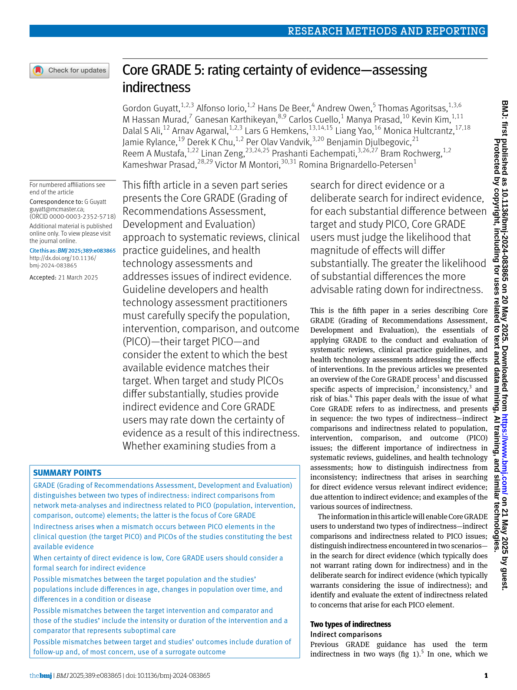
複数の介入の代替案が存在することも複雑さの一因となります。多介入比較の枠組みやネットワークメタアナリシスによる統計的要約はこの問題に対処するのに役立ちますが、対象集団やネットワークメタアナリシスで検討する介入を明確に定義することが依然として重要です。この明確さはエビデンスの解釈、確実性の評価、合理的な意思決定に寄与します。
検査に関する質問
検査や検査戦略に関する妥当な質問を特定するためには、検査や検査戦略の役割や目的を明確に定めることが重要です。検査には様々な目的があります。例えば、疾患や状態の診断、個人の基礎リスクや予後の重要な差異の特定、介入の治療効果のモニタリングなどです。
検査に関する質問は他の管理戦略と同様に扱うことが可能です。検査の最終目的は医療過程における役割にかかわらず患者のアウトカム改善に寄与することであるため、前述のPICOの構成要素（対象集団、検査に基づく介入または戦略、比較検査介入または戦略、関心のあるアウトカム）を用いて質問を構築できます。
しかし、多くの場合、異なる検査や検査戦略が関連アウトカムに与える影響に関する直接的なエビデンスは存在しません。このような場合、GRADEユーザーは診断検査の精度研究から得られるエビデンスを用いて、検査使用の影響について推論を行うことがあります。これらの推論は非公式に行う場合もあれば、数学的モデルを用いる場合もあります。
診断検査精度研究を特定することが目的の場合、PICOフレームワークは修正が必要です。介入はインデックス検査に置き換えられ、比較はリファレンススタンダード（基準検査）となります。
検査のもう一つの特徴は、単独の介入として用いられることはほとんどなく、診断の経路や戦略の一部として用いられることが多い点です。これにより、特定の疾患や状態の確率を推定します。また、検査は治療介入と組み合わせて用いられることもあり、最終的な健康アウトカムに対する検査の寄与を推定するのが難しい場合があります。
例えば、American Society of Hematologyのガイドラインパネルは以下の質問に取り組みました：
「下肢深部静脈血栓症の中間的臨床確率を持つ集団において、疑われる深部静脈血栓症を評価するための最適な診断戦略は何か？」(2)
臨床評価、D-ダイマー検査、下肢超音波検査の複数の組み合わせや順序が考えられます。また、これらの戦略を評価するランダム化試験は存在しません。そこで、ガイドラインの方法論者は検査精度研究のデータを用いて、各診断経路の偽陰性（疾患ありだが検査陰性）および偽陽性（疾患なしだが検査陽性）の割合をモデル化しました。次に、これらの代替案を偽陰性・偽陽性の許容割合という事前設定された閾値と比較しました。これらのデータに加え、費用、実現可能性、アクセスのしやすさなどの考慮事項を踏まえ、最終的に特定の診断経路が選択され、推奨質問に答えました。
追加のレビュー質問
ガイドライン作成やその他の意思決定プロセスでは、複数のエビデンスの流れを統合することが、十分な情報に基づく意思決定のために不可欠です。
重要な側面の一つは、介入によって生じる異なる健康状態を個人がどのように評価するか（アウトカムの相対的価値）を理解することです。さらに、資源利用、費用対効果、受容性、実現可能性、健康格差への影響に関連するエビデンスを統合することも多くの場合重要です。多様なエビデンスを統合することで、意思決定者は介入の望ましい結果と望ましくない結果を包括的に理解できます。
これらの各要素は特定のレビュー質問を導き、関連するエビデンスの特定、評価、要約に役立ちます。これらの質問は「エビデンスから意思決定へ」のセクションで詳述します。
ガイドライン質問：行動を探る
本質的に、ガイドラインは介入の望ましい結果と望ましくない結果のバランスをとり、その介入が一部の個人、あるいは多くの個人にとって適切な選択肢かどうかを判断することを目的としています。この複雑な質問は、GRADE Evidence to Decision Frameworkにおける複数の基準に細分化され、意思決定を管理しやすく、透明かつ体系的にします。
大まかに言えば、Evidence to Decision Frameworkは以下を評価します：
- 介入の純健康効果（比較対象との関係）とその不確実性
- 個人の価値観やアウトカムの相対的重要性のばらつき
- 資源、健康格差への影響、アクセスのしやすさ、実現可能性などの文脈的要因
PICOフレームワークに従い、推奨質問は通常「集団Zにおいて、介入XまたはYを用いるべきか？」という形で構成されます。
推奨質問の重要な構成要素は「should（すべきか）」と「use（用いる）」という言葉であり、後者は場合によって「offer（提供する）」など類似の言葉に置き換えられることもあります。いずれもガイドライン質問が具体的な行動に関するものであることを反映しています。
実践的アドバイス
ガイドライン質問は具体的かつ実行可能な焦点を持って作成することが非常に重要です。例えば、「心不全患者において、追加の検査で正確な原因を調査すべきか？」という質問は一般的には理解可能ですが、具体性に欠けています。定義された検査が明示されていないため、推奨される行動が読者によって解釈が分かれやすく、推奨の影響評価も曖昧になります。
別の例として、「ヒトパピローマウイルス（HPV）は子宮頸がんを引き起こすか？」という質問があります。この質問は子宮頸がんのメカニズムやHPVワクチンの効果を理解するためには重要ですが、直接的な臨床行動を示唆していません。この種の質問は「背景質問」と呼ばれ、ガイドラインの文脈を説明するために用いられ、中心的な焦点とはなりません。
（以下、ナビゲーション用テキストや参考文献等は翻訳対象外のため省略）
コアGRADE フローチャート
以下のフローチャートと図は、CoreGRADEシリーズ論文から抽出したものです。画像をクリックすると拡大表示されます。
図1: 非直接性の2つのタイプ — PICOの非直接性と間接比較

図2: 非直接性の評価プロセス

詳細解説を読み込み中...
アウトカム（Outcomes）
Outcomes（アウトカム）
著者: Michael McCaul, Celeste Naude, Ignacio Neumann, Sue Brennan, Joerg Meerpohl, Marina Davoli, Pablo Alonso Coello, Elie Akl, Nicole Skoetz, Jun Xia, Holger J. Schünemann, Philipp Dahm
グラフィックス著者: Carlos Cuello
最終更新日: 2025年8月14日
Key message（重要メッセージ）
アウトカムの選択と評価は、システマティックレビューやガイドライン作成において、意思決定にとって意味のあるものとするために不可欠です。代理指標や間接的な測定値よりも、個人にとって重要なアウトカムを優先すべきです。選択はコアアウトカムセットや望ましい効果・望ましくない効果の両方を考慮し、理想的にはアウトカムの明確な定義を伴うべきです。GRADEでは、意思決定者を支援するためにアウトカムを重要度（クリティカル、重要、重要でない）で分類します。
Introduction（はじめに）
健康関連アウトカムとは、健康介入、医療システムとの相互作用、または広範な健康環境への曝露の結果として、個人、集団、または人口が経験する健康状態の望ましいまたは望ましくない変化を指します。これは多次元的な概念であり、異なるレベルで検討され、研究間で一貫性なく記述・測定されることが多いです。健康アウトカムは通常、以下のような広範なカテゴリーに分類されます：生存または死亡率、疾患や状態、臨床的または生理学的反応、生活への影響や患者報告アウトカム、関心のあるイベント、および有害事象。
本章では、アウトカムの選択と評価に関する一般原則と重要な考慮点を概説し、このプロセスを導くためのアプローチを説明します。
Establish a broad range of potential outcomes（幅広い潜在的アウトカムの設定）
GRADEユーザーは、アウトカムの選択と評価のプロセスを、証拠の統合やそれに基づく意思決定に影響を受ける人々にとって関連する可能性のあるすべてのアウトカムを特定することから始めるべきです。これは、特にその状態を経験した人々や介護者、医療提供者、そして視点によっては政策立案者や支払者などの利害関係者にとって重要で意味のあるアウトカムに注意を払いつつ、幅広いアウトカムを設定することを意味します。
重要なのは、アウトカムの選択は証拠の利用可能性によってではなく、意思決定への関連性によってのみ決定されるべきだということです。まだ研究されていないアウトカムであっても、情報に基づく意思決定にとって重要またはクリティカルであれば含めるべきです。さらに、GRADEユーザーは望ましい効果と望ましくない効果の両方を同等に重視すべきです。
アウトカムの検討はブレインストーミングが最も一般的な方法ですが、GRADEユーザーは影響を受ける個人がアウトカムをどのように評価するかを研究した研究など、個人にとって重要なアウトカムを特定する他の方法も考慮すべきです。(1)
コアアウトカムセット（Core Outcome Sets; COS）
関連アウトカムを特定するもう一つの有用な方法は、利用可能な場合にはコアアウトカムセットの活用です。コアアウトカムセットは、特定の医療領域におけるすべての臨床試験で測定・報告されるべき主要なアウトカムの標準化された合意リストです。(2) Core Outcome Measures in Effectiveness Trials (COMET) Initiativeは、公開されているおよび進行中のCOSの無料で公開アクセス可能なデータベースを維持しています。
さらに、Marker State Databaseは健康アウトカムの標準化された記述子を提供し、研究間の比較可能性を支援する一貫した定義を提供します。
理想的には、健康アウトカムの選択と記述は、患者、介護者、助言グループなどの意思決定者の積極的な関与を伴い、文献からの証拠に基づいて行われるべきです。(3)
Rating the importance of outcomes（アウトカムの重要度評価）
幅広いアウトカムが設定されたら、GRADEユーザーは意思決定に優先すべきアウトカムを決定します。よく使われる方法の一つは、1から9のスケールでアウトカムを評価することで、1が最も低く、9が最も高い意思決定への重要度を示します。このスケールは以下の3つのカテゴリーに分類されます：
- 9〜7点：クリティカル（critical）
- 6〜4点：重要（重要だがクリティカルではない）
- 3〜1点：重要でない（not important）
通常、クリティカルまたは重要と判断されたアウトカムのみがエビデンス統合報告書に含まれ、Evidence ProfilesやSummary of Findingsテーブルに提示されます。推奨や意思決定を行う際には、クリティカルとみなされたアウトカムが望ましい効果と望ましくない効果のバランス評価でより大きな重みを持ちます。
Figure 1 – Outcome rating scale（図1 – アウトカム評価スケール）
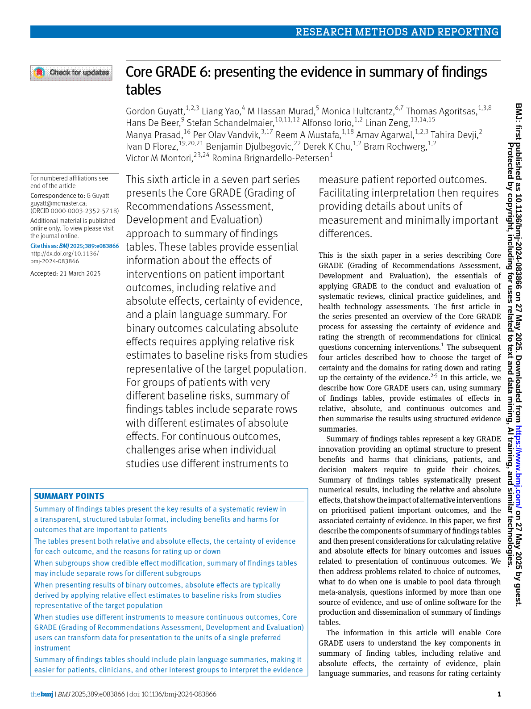
- 重要でない（スコア1〜3）のアウトカムはSummary of Findings（SoF）テーブルから除外され、全体の証拠確実性に影響を与えません。
- 重要（スコア4〜6）のアウトカムはSoFテーブルに含まれますが、全体の確実性評価には影響しません。
- クリティカル（スコア7〜9）のアウトカムのみがSoFテーブルに含まれ、全体の証拠確実性を決定します。
一般的なルールとして、GRADEユーザーは選択するアウトカムの数を管理可能な範囲に保つことを目指し、理想的には7つ未満にします。アウトカムが多すぎると、望ましい効果と望ましくない効果のトレードオフを評価するのが難しくなり、特に意思決定や推奨の支援を目的とした証拠統合の場合に問題となります。
アウトカムの重要度評価は、システマティックレビューのプロトコル作成段階やガイドラインパネルが質問と検討すべきアウトカムに合意する段階の早期に行うべきです。
オンライン調査ツールは、参加者それぞれの独立した評価を可能にし、プロセスを効率化するとともに、参加者間でアウトカムの価値観の違いを明らかにするのに役立ちます。評価プロセスの前には、各アウトカムが何を意味するかを明確に議論し、共通理解を確保することが重要です。
Practical advice（実践的アドバイス）
例えば、肺塞栓症というアウトカムが提示された場合、GRADEユーザーは軽度から中等度、重度で治療の程度が異なる症例まで様々な重症度を想定するかもしれません。アウトカムが何を示すかの統一的な「全体像（gestalt）」がないことは、アウトカム評価の不一致の一般的な原因です。したがって、症状、時間軸、検査・治療、結果などの次元を用いて、影響を受ける人々にとってそのアウトカムが何を意味するかを構造化して記述することは非常に有用です。これらの健康アウトカム記述子は、パネルメンバーが健康アウトカムの意味合いについて共通理解に達するのを助けます。以下のように重症度別にアウトカムを分類することも有効です。
Box 1 – Example of a marker state for moderate severity pulmonary embolism（ボックス1 – 中等度肺塞栓症のマーカーステートの例）
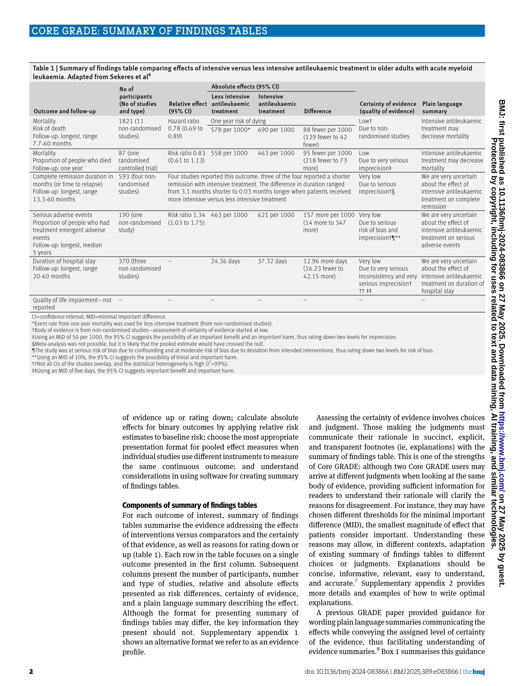
軽度および重度の肺塞栓症についても同様のマーカーステートが作成されています。追加の例については、右側パネルのMarker State Databaseをご参照ください。
Reassess relative importance of outcomes（アウトカムの相対的重要度の再評価）
アウトカムの選択、評価、順位付けは本質的にGRADEユーザーの価値判断を伴います。レビューで新たに特定された重要なアウトカムが初期段階で考慮されていなかった場合、それらを含めるためにアウトカムとその相対的重要度の再評価が必要になることがあります。このステップでは、レビュー担当者やパネルメンバー（必要に応じて患者や一般市民も含む）に、最初のステップで含めたアウトカムおよびレビューで特定された追加のアウトカムの相対的重要度を再考してもらいます。
Additional considerations（追加の考慮事項）
Value placed on outcomes by key interest-holders（主要利害関係者によるアウトカムの価値評価）
介入の利益と害に関する情報に基づく意思決定を行うためには、意思決定者はアウトカムの相対的重要度を明確に把握する必要があります。この情報は、患者の価値観に関する質的・量的な一次研究、質的エビデンス統合、または疾患を経験した人々の代表者から直接得ることができます。
量的手法には健康ユーティリティ評価が含まれ、健康アウトカムの重要度を表現するのに用いられます。ユーティリティ値は直接法（例：standard gamble）や間接法（例：生活の質に関する質問票）で得られ、個人が特定のアウトカムや健康状態に割り当てる平均的な価値を示します。これらの値は0から1の範囲で、0は死亡回避の価値、1は完全な健康を表します。
関連する指標としてdisutility（1 - ユーティリティ）があり、こちらの方が直感的な場合が多いです。disutilityが高いほど、個人が特定のアウトカムや健康状態を回避する価値を高く評価していることを示します。
ガイドライン作成の文脈では、通常ユーティリティ値に関する証拠が求められます。この情報は、評価者（通常はレビュー担当者やガイドラインパネル）が付ける評価が患者の価値観と系統的に異なる可能性があるため、クリティカルおよび重要なアウトカムの再評価時に考慮される必要があります。
介入効果を評価するシステマティックレビューでは、ユーティリティ値の体系的検索は通常行われませんが、既存のシステマティックレビューからのユーティリティ情報があれば、対象集団に関連するすべてのアウトカムが適切に考慮されているか確認するのに役立ちます。
Equity considerations（公平性の考慮）
公平性の考慮は、優先順位設定から統合、普及までエビデンス統合の様々な段階で組み込むことができます。アウトカムの選択と評価においては、特に不利な立場にあるグループの見解を考慮する必要があります。これらのグループの利益と害のバランスに対する見解は一般集団と異なる場合があるためです。アウトカムの重要度を考慮する際の公平性の組み込みに関する具体的な提案は別の文献に示されています。(4)
The role of surrogate outcomes（代理アウトカムの役割）
前述の通り、GRADEは個人に直接関連するアウトカム（例：死亡率、罹患率、生活の質）を優先します。一方で、特定のPICOに関しては、血糖値や喀痰培養などの検査値、肺機能評価などの機能的測定、骨密度や腫瘍のサイズ基準による反応など、個人が実際に関心を持つアウトカムに間接的に関連する他のアウトカム測定値に関する研究証拠が多く存在します。これらのアウトカムは測定が容易で臨床研究のサンプルサイズも小さくて済みますが、臨床的または公衆衛生的に関連するアウトカムとの相関は通常乏しいか弱いです。(3) さらに、代理アウトカムで観察された利益は、より関連性の高いアウトカムで後の研究が行われた際に再現されないことが多いです。
しかし、重要なアウトカムに関する証拠が不足している場合には代理アウトカムが役割を果たすことがあります。その場合、GRADEユーザーは個人に重要なアウトカムと代理アウトカムを明確に区別して示すべきです。一般的な原則として、代理アウトカムと対応する重要なアウトカムとの相関の強さが代理アウトカムの信頼性を判断する手がかりとなりますが、この相関はしばしば不明確か十分に文書化されていません。
個人に重要なアウトカムの代替として用いられる代理アウトカムは、代理性（indirectness）のために1〜3段階の評価ダウンを受けるのが一般的です。代理アウトカムがどの程度代替として機能するかによって、評価のダウンの程度が決まります。
以上が「Outcomes」章の翻訳となります。
コアGRADE フローチャート
以下のフローチャートと図は、CoreGRADEシリーズ論文から抽出したものです。画像をクリックすると拡大表示されます。
図1: Summary of Findings (SoF) テーブルの構成要素

図2: SoFテーブルの例 — 連続アウトカムの提示方法

詳細解説を読み込み中...
介入の確実性評価の原則
介入の確実性評価の原則
著者：Marius Goldkuhle, Nina Kreuzberger, Ignacio Neumann, Sue Brennan, Joerg Meerpohl, Miranda Langendam, Marina Davoli, Pablo Alonso Coello, Philipp Dahm, Jun Xia, Elie Akl, Holger J. Schünemann, Nicole Skoetz
グラフィック作成者：Carlos Cuello
最終更新日：2025年8月20日
主要メッセージ
GRADEは、介入の効果推定値にどの程度の信頼を置けるかを評価するための透明かつ体系的なアプローチを提供します。エビデンスの確実性は、真の効果が特定の範囲内または定義された関心の閾値の上または下にあるという信頼度を反映し、点推定値は介入効果の最良の近似値として機能します。したがって、確実性の評価は、推定効果の解釈における意思決定閾値や確実性範囲の適用と密接に関連しています。
興味のある質問は体系的に導出・定式化される
GRADEで扱う質問は、確立されたPopulation–Intervention–Comparator–Outcome（PICO）形式を用いて構造化されます。
通常、GRADEの利用者はまず対象集団（Population）、介入（Intervention）、比較対象（Comparator）を定義します。アウトカムは別の段階で評価され、GRADEはアウトカムの評価と優先順位付けに透明かつ体系的なアプローチを提供します。このプロセスには、理想的には質問の対象となる人々の意見も取り入れられます。
PICOフレームワークの一部の変形では時間要素も含まれますが、通常は介入が行われる期間やアウトカムが測定される期間など、既存のPICO要素に組み込まれています。つまり、時間は一般的にPICOの他の要素に既に含まれています。
レビュー質問とガイドライン質問は同じ構造を持ちますが、その目的と適用は異なります。システマティックレビューやその他のエビデンス統合は、主にランダム化試験や非ランダム化試験のエビデンス群から介入の健康効果に関する知見を得ることを目的としています。
一方、推奨質問は、特定の集団に対して特定の介入を使用すべきかどうかを問うもので、行動指向的であり、医療専門家や一般市民の意思決定を導きます。これらの質問は複数のエビデンスの流れを活用し、理想的には推奨や意思決定に関連するすべての基準にわたる複数のシステマティックレビュー結果を統合します。(1)
GRADEは介入のエビデンス確実性をどのように定義するか？
エビデンスの確実性とは、効果推定値が特定の範囲内、または特定の関心閾値の上または下にあるという信頼度を指し、点推定値は介入効果の最良の推定値を表します。したがって、エビデンスの確実性は推定効果の閾値や確実性範囲の使用と密接に結びついています。(2,3)
GRADEの重要な特徴は、個々の研究ごとではなく、利用可能なエビデンス全体（複数の研究にまたがって）でアウトカムの確実性を評価する点です。エビデンスの確実性には4つのレベルがあります：
- 高い確実性：推定値の真の値が関心の閾値の一方の側または特定の範囲内にあることに高い信頼がある。
- 中程度の確実性：推定値の真の値が関心の閾値の一方の側または特定の範囲内にあることに中程度の信頼がある。真の値は確実性評価の目標からわずかにずれる可能性がある（つまり、異なる範囲に入る可能性がある）。
- 低い確実性：推定値の真の値が関心の閾値の一方の側または特定の範囲内にあることに低い信頼がある。真の値は確実性評価の目標からずれる可能性が高い（つまり、異なる範囲に入る可能性が高い）。
- 非常に低い確実性：推定値の真の値が関心の閾値の一方の側または特定の範囲内にあることに非常に低い信頼がある。真の値は確実性評価の目標から大きくずれる可能性が高い（つまり、異なる範囲に入る可能性が非常に高い）。
確実性評価は4段階のプロセスで行われる
エビデンスの確実性を評価するには4つのステップがあります（図1）：
- 閾値の数の決定
最初のステップは、確実性評価に用いる意思決定閾値の数を決定することです。これらの閾値はコンセンサスや経験的証拠に基づいて設定され、透明に報告されるべきです。
- 確実性評価の目標の決定
次に、確実性評価の目標を特定します。通常は点推定値が位置する場所に対応します。
- エビデンスの評価
この段階で、GRADE利用者は研究デザインや実施、非一貫性、間接性、不確実性、発表バイアスなどGRADEのドメインに関連する潜在的な懸念を体系的に評価します。用量反応勾配、大きな効果、逆の交絡はエビデンスの確実性を高める可能性があります。
- 評価の引き下げまたは引き上げの判断
GRADEドメインのいずれかに懸念があることだけで確実性を引き下げる理由にはなりません。引き下げは、真の効果推定値が確実性評価の目標範囲外にある合理的な疑いが生じる場合にのみ適切です。同様に、引き上げも単に推論を強化する可能性がある要因を認識しただけでは不十分で、交絡や偽の結果の可能性を分析した上で判断される必要があります。
図1. エビデンスの確実性評価の4段階のプロセス
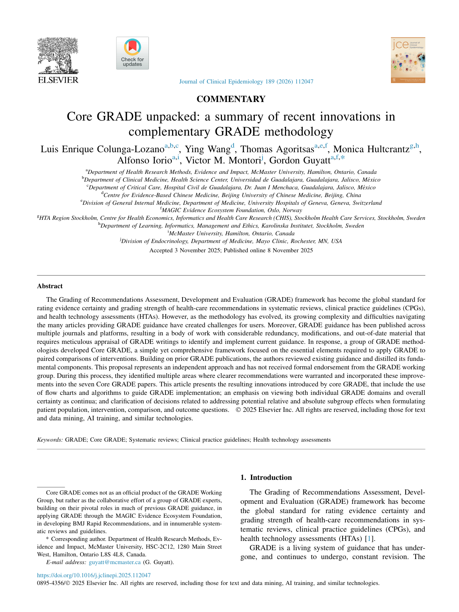
確実性評価における「概念化」とは適用される閾値の数を指します。これは、あまり文脈化されていないアプローチ（例：2つの閾値使用）から、より文脈化されたアプローチ（例：6つの閾値使用）まで幅があります。以前のGRADE論文ではこれらを「最小限」「部分的」「完全に文脈化」と呼んでいましたが、混乱を招いたため、現在は使用する閾値の数、その大きさ、定義方法を明確に示すことが推奨されています。
エビデンスの確実性は絶対効果推定値に基づいて評価すべき
確実性評価は、リスク差や平均差などの絶対効果推定値を用いて行うべきです。相対効果と異なり、絶対効果は特定の集団における効果の大きさを直接示し、望ましい結果と望ましくない結果の両方を含む異なるアウトカム間の比較を可能にします。
連続変数のアウトカムは通常、絶対値で自然に表現されます。例えば、入院期間は日数で測定され、これは絶対推定値です。一方、二値アウトカムは介入の絶対効果を表すためにリスク差の計算が必要です。これは通常、相対リスク減少（1－リスク比）に適切なベースラインリスクを乗じて得られます。
ベースラインリスクは信頼できる情報源から取得し、その不確実性も慎重に考慮すべきです。GRADE利用者は、含まれる研究のコントロール群の中央値リスクや、観察研究や低バイアスの非ランダム化研究のシステマティックレビューなど信頼できる外部情報源からベースラインリスクを選択できます。いずれの場合も、ベースラインリスクの不確実性を考慮し、間接性ドメインの確実性評価に反映させる必要があります。
確実性評価の開始レベルはランダム化試験と非ランダム化研究で異なる場合がある
適切に実施され十分なサンプルサイズがある場合、ランダム化は交絡や選択バイアスの可能性を減らします。したがって、ランダム化試験はGRADE評価で常に高い確実性から開始します。
一方、非ランダム化研究（NRSI）は交絡や選択バイアスの影響を受けやすいです。NRSIの確実性評価には2つのアプローチがあります：
- 低い確実性から開始：交絡や選択バイアスの可能性を初めから認める方法です。確実性は、ランダム化の欠如が主な懸念である場合にのみ引き上げられます。大きな効果、用量反応勾配、または残存交絡が観察された関連を強化する場合に該当します。ただし、推定値が不確実な場合は引き上げるべきではありません。
- 高い確実性から開始：この方法ではNRSIもランダム化試験と同様に高い確実性から始まり、ターゲットトライアル（介入の仮想的なランダム化・バイアスフリー試験）に対する交絡や選択バイアスを構造的に評価します（例：ROBINS-I）。既知の交絡因子で適切に調整され、残存交絡のリスクが低い場合は、確実性を1段階引き下げるか引き下げないこともあります。特に、大きな効果、用量反応勾配、または交絡因子が効果の推論を強化する場合は、引き下げを控えることが説得力があります。NRSIで1～2段階の引き下げを行わない例はまだ稀です。
GRADE利用者が非ランダム化研究の確実性評価を低い確実性から開始する場合、引き上げの3つのドメインは本来の意図通り、交絡や選択バイアスで説明しきれない結果が観察された場合に確実性を高めるために適用されます。
一方、高い確実性から開始し、交絡やその他の研究制限を構造的に評価する場合は、引き上げドメインに該当する状況がむしろ1段階の引き下げ、あるいは引き下げなしの判断を支持することがあります。
多くの場合、非ランダム化研究の交絡やバイアスの構造的評価は中程度から高リスクを示すため、両アプローチは通常、最終的な確実性評価で同じ結論に至ります。ただし、後者のアプローチはより高度なGRADE利用者向けであり、非ランダム化研究が必ずしも2段階引き下げられる必要がない状況を特定する柔軟性を提供します。
GRADEドメインは重複することが多く、二重評価を避けるべき
GRADEのドメインはしばしば重複し、懸念の正確な原因を特定するのが難しい場合があります。例えば、非一貫性と不確実性は密接に関連しています。ランダム効果モデルを用いたメタアナリシスでは、非一貫性はプール推定値の信頼区間の計算に組み込まれています。信頼区間の幅が主に研究間のばらつきによる場合（例：ランダム効果モデルと固定効果モデルの比較）、GRADE利用者は非一貫性、不確実性、またはその両方で確実性を引き下げることが正当化される場合があります。
同様に、確実性を引き上げるドメインでも重複が起こります。例えば、用量反応勾配が観察された場合、極端なカテゴリーのみを考慮すると大きな効果が見えることがあります。この場合、同じ根本的なシグナルに対して2回引き上げるのは不適切です。
一般原則として、同じ根本的要因に対して確実性を複数回引き下げたり引き上げたりすることは避けるべきです。
確実性評価は独立して行い、透明性をもって報告するべき
体系的なプロセスのすべての段階と同様に、GRADEの確実性評価は少なくとも2名の評価者が独立して行い、意見の相違は議論や必要に応じて第三者のレビュアーを交えて解決するのが望ましいです。この方法は判断の信頼性と再現性を高めます。実際には、評価はエビデンス統合と意思決定の間で複数回の反復を経て進化し、パネルや意思決定者からの閾値や間接性に関する意見を反映します。
GRADEの中心原則は透明性です。明確なコミュニケーションを促進し、結果の理解を深めるために、GRADEは異なる目的や対象に合わせた標準化フォーマットを提供しています：Summary of Findingsテーブル、Evidence Profiles、Evidence to Decision（EtD）フレームワークなどで、評価理由や説明を標準化された文言で記録します。これらのフォーマットに加え、GRADEはシステマティックレビューやガイドライン作成において、効果の大きさとその確実性を情報豊かな表現で伝える方法も指導しています。
（以下、図表や参考文献は原文に準じ省略）
コアGRADE フローチャート
以下のフローチャートと図は、CoreGRADEシリーズ論文から抽出したものです。画像をクリックすると拡大表示されます。
図1: 確実性評価の4段階プロセス

図2: 確実性の連続体 — 個別ドメインと全体的な確実性

詳細解説を読み込み中...
Risk of bias（ランダム化試験）
Limitations in the design or execution of randomized trials
著者: Ignacio Neumann, Rebecca Morgan, Miranda Langendam, Jan Brozek, Carlos Cuellos, Sue Brennan, Joerg Meerpohl, Elie Akl, Holger J. Schünemann
グラフィックス著者: Carlos Cuello
最終更新日: 2025年8月8日
Key message
ランダム化比較試験（RCT）の設計および実施における制限（リスク・オブ・バイアスとも呼ばれる）は、GRADEの8つのドメインの一つです。その中でも、エビデンスの確実性を評価する際に評価を下げる可能性がある5つのドメインのうちの一つです。このドメインは、研究設計や実施の欠陥が、介入の真の効果の位置づけに対する信頼度に重大な影響を与えるかどうかを評価します。研究の制限を評価する主な方法は、感度分析を用いてリスクの高いバイアスと低いバイアスの研究を統計的または図示的手法で比較することです。しかし、感度分析で明らかな差が見られなくても、エビデンスの確実性を下げる必要がある場合もあります。
ランダム化比較試験の設計や実施における制限とは何か？
名前が示す通り、ランダム化はランダム化比較試験を非ランダム化介入研究（NRSIs）と区別する決定的な特徴です。ランダム化とは、参加者を選択や好みではなく、偶然により異なる群に割り当てることを指します。ランダム化の主な目的は、年齢、性別、疾患の重症度など、結果に影響を与える可能性のある因子（交絡因子）の不均衡を最小限に抑えることです。ランダム化の失敗は通常、非常に重大な問題とみなされます。
しかし、ランダム化と割り付けの隠蔽は試験開始時点での予後因子のバランスを保証するのみです。このバランスを試験全体で維持するためには、プロトコルの遵守、盲検化、意図した治療群での解析（intention-to-treat解析）、および全てのランダム化参加者の結果の完全な報告が不可欠です。試験実施の方法論的制限は結果の妥当性を損ない、重大な懸念を引き起こします。
ランダム化比較試験の設計や実施における制限の評価方法
ランダム化比較試験の設計や実施における制限の評価は、Cochrane Risk of Bias 2.0(1)のような特定のツールを使う方法や、本章で述べる一般原則に基づく厳密な分析（表1）など、様々な方法があります。
表1 – ランダム化比較試験の設計や実施における制限
| 制限項目 | 説明 | 試験者がバイアスを減らすためにできること |
|---|---|---|
| --- | --- | --- |
| ランダム化プロセス | 参加者を異なる治療群にランダムに割り付けることで、予後因子の類似した群を作り、結果の発生確率を均等にする | コンピューター生成の割り付けシーケンスと割り付けの隠蔽（例：中央ランダム化） |
| プロトコルからの系統的逸脱 | 意図したプロトコルからの逸脱は、ランダム化で確立された予後の類似性を損なう可能性がある | 参加者、研究者、研究スタッフの盲検化、意図した治療群での解析（intention-to-treat解析） |
| 欠損アウトカムデータ | 多くのアウトカムデータが欠損すると、ランダム化で確立された予後のバランスが損なわれる可能性がある | フォローアップ率向上のための戦略、欠損データに対処する解析戦略 |
| アウトカム測定 | アウトカム判定者が治療割り付けを知っている場合、バイアスが生じる可能性がある | 参加者、研究者、研究スタッフ、アウトカム判定者の盲検化 |
| 報告された結果の選択 | 同じアウトカムの異なる報告方法がある場合、研究者がより良い結果に見えるものを選択する可能性がある | コアアウトカムセットの使用、詳細なプロトコルの公開 |
ランダム化プロセス
ランダム化は、単純ランダム化、ブロックランダム化、層別ランダム化、適応的ランダム化など、様々な方法で実施できます。単純ランダム化は、事前の基準なしに参加者をランダムに割り付ける方法です。ブロックランダム化は、一定サイズのブロックに分け、その中でランダムに割り付けることで群間の不均衡を防ぎ、特定の特徴をコントロールします。層別ランダム化は、年齢、性別、疾患重症度などの基準で層別化した後、各層内でランダム割り付けを行います。適応的ランダム化は、試験データや結果に基づいて割り付けを調整します。
どの方法でも、ランダム化には必ず特定のランダムシーケンスが存在します。通常、コンピューターで生成されますが、真の偶然性に基づく方法ならどれも許容されます。個人識別番号や入院日などの特定の個人情報に基づく割り付けは完全なランダムではなく、割り付け隠蔽も困難なため不適切です。
割り付けの隠蔽とは、ランダム化シーケンスが参加者の割り付けを決める担当者に知られないようにする措置を指します。割り付けが知られると、担当者の意図的・無意識的な影響でバイアスが生じる可能性があります。したがって、真にランダムな方法でシーケンスを生成し、それを割り付け担当者から隠すことが重要です。
割り付けの隠蔽は、中央ランダム化や連番不透明封筒の使用などで実現されます。中央ランダム化は、調整センターがシーケンスを生成し、参加者登録後に割り付けを通知します。不透明封筒は、番号付きの不透明封筒に割り付け情報を入れ、参加者登録後に開封しますが、操作されやすいため中央ランダム化より信頼性は低いとされます。(2)
実践的アドバイス
GRADEを用いてランダム化比較試験のリスク・オブ・バイアスを評価する際は、シーケンスの生成方法と隠蔽方法を確認してください。コンピューター生成シーケンスと中央ランダム化が最も適切です。
完璧なランダム化でも、参加者数が少ない場合は群間のベースライン特性に偶然の不均衡が生じることがあります。これはバイアスではなく偶然の産物です。
プロトコルからの系統的逸脱
意図したプロトコルからの系統的な逸脱は、ランダム化で確立された予後のバランスを崩し、介入群と比較群で結果の発生確率に差を生じさせる可能性があります。複雑な介入（医療サービス介入、リハビリ、公衆衛生、手術など）は全参加者に均一に適用されないことがあり、群間で異なる適用はバイアスを生じます。慢性疾患の薬物治療などは服薬遵守が効果に影響するため、遵守の差もバイアス要因となります。
盲検化
系統的逸脱を防ぐ方法の一つは、参加者、研究者、研究スタッフ、アウトカム判定者がどの群に割り付けられたかを知らないようにすることです。プロトコル逸脱のドメインでは参加者、研究者、スタッフの盲検化を評価し、アウトカム判定者の盲検化はアウトカム測定のドメインで別途評価します。
盲検化は逸脱を完全に防ぐわけではありませんが、介入群と比較群間で系統的な差異が生じる可能性を減らします。
盲検化がない場合でも、参加者や研究者が予後に影響を与えられない状況では必ずしもバイアスとは限りません。例えば、SoFEA試験（閉経後ホルモン受容体陽性進行乳癌に対するフルベストラント＋アナストロゾール vs フルベストラント単独）はオープンラベルRCTで、723名を登録し全生存期間に有意差はありませんでした。(3) この試験では予後が極めて悪く、介入で変わらず、アウトカムも客観的で測定しやすいため、盲検化の欠如によるバイアスは考えにくいです。
一般に、盲検化の欠如は主観的なアウトカム、参加者報告アウトカム、または参加者や研究者がアウトカムの発生確率に影響を与えうる場合に問題となります。
実践的アドバイス
盲検化と割り付けの隠蔽は混同しやすいですが異なります。盲検化（マスキング）は、参加者、研究者、アウトカム判定者が割り付けを知らない状態を指し、割り付けの隠蔽は参加者登録担当者が割り付けを知らない状態を指します。盲検化はランダム化後に行われ、割り付けの隠蔽はランダム化前に行われます。
意図した治療群での解析（Intention-to-treat解析）
意図した治療群での解析は、参加者が実際に介入を受けたかどうかにかかわらず、割り付けられた群で解析する原則に基づきます。例えば、手術群に割り付けられたが手術を受けなかった参加者も手術群として解析します。これにより、群間の予後バランスの乱れを減らします。
一方、プロトコル遵守解析や実際に受けた治療に基づく解析は、ランダム化後の参加者除外や欠損データにより予後バランスが崩れやすく、バイアスを生じるため、通常は効果評価には適切でないとされます。
欠損アウトカムデータ
前述の通り、ランダム化後の参加者除外はバイアスを生じます。欠損アウトカムデータとは、アウトカムが発生したか不明な参加者がいることを指します。多くは参加者の脱落や連絡不能が原因です。
参加者が脱落する理由は通常、疾患や介入に関連しており（無作為ではない）、欠損データの割合が多いと試験結果の信頼性が低下します。欠損データの許容割合に関する明確な基準はありません。
欠損データの影響とバイアスリスクを評価するには、利用できないデータに関して仮定を置く必要があります。
- データは無作為に欠損していると仮定する方法
多重代入法や最後の観察値の持ち越し法などで使われますが、欠損者と非欠損者の系統的差異を過小評価するため、システマティックレビューやGRADE評価では推奨されません。
- 欠損者のアウトカムリスクに関する現実的仮定
欠損者は介入による悪い結果のリスクが高いと仮定する方法です。(4) このリスク増加は「informative missingness odds ratio（IMOR）」というオッズ比で定量化されます。(5)
100件のシステマティックレビュー（653件のRCTを含む）の調査では、IMORが1.5から5の範囲で異なる現実的仮定を用いた場合、6%から22%のメタ解析で効果推定が事前設定された閾値を超えて変化しました。(6) 欠損データの割合が増加したり、アウトカムが頻繁な場合に変化が大きくなりやすいです。
実践的アドバイス
欠損アウトカムデータに関する仮定は、意図した治療群での解析とは区別すべきです。意図した治療群での解析は利用可能なデータの扱いに関するもので、欠損データの扱いは別問題として考慮します。
アウトカム測定
ランダム化試験のアウトカム判定者は、アウトカムの発生有無を決定・記録します。多くの試験ではアウトカム評価を専門に行う調査者がいます。
アウトカム判定者が介入割り付けを知っていると、無意識または意識的に介入群に有利な記録をする可能性があり、バイアスが生じます。適切なアウトカム測定を保証する方法はアウトカム判定者の盲検化です。多くの試験では、独立した委員会がアウトカムの発生を審査・判定します。
報告された結果の選択
同じアウトカムを報告する複数の方法がある場合、研究者は自分が優れていると信じる介入群に有利に見える結果を選択することがあります。これがバイアスを生じます。ただし、これは例えば生存時間解析と固定時点の死亡率解析のような、より適切な統計解析手法の使用とは区別されるべきです。
研究の制限がエビデンスの確実性に与える影響
設計や実施の制限は、GRADEの5つのドメインのうちの一つであり、エビデンスの確実性を下げる可能性があります。制限の程度に応じて、確実性は1段階、2段階、または3段階下げられ、深刻度に応じて「重大」「非常に重大」「極めて重大」と評価されます。
感度分析
研究の制限の影響を評価する最良の方法は、リスクの高いバイアスと低いバイアスの試験を比較する感度分析です。個々の試験評価にはCochrane ROB 2.0ツールなどの標準化ツールが用いられます。(1)
感度分析は統計的手法や図示的手法で行えます。低リスクと高リスクの試験の効果推定が不一致なら、エビデンスの確実性を下げるべきです。事前にプロトコルで定めていれば、高リスクの研究を除外することもあります。
統計的手法は、カイ二乗検定などの適合度検定で低リスクと高リスクのプール推定値を比較します。有意なp値は差が偶然ではないことを示しますが、個々の試験が単位のため検出力は低いです。また、効果推定の差が小さいか不確実性が大きい場合は検出できません。
図示的手法は効果の大きさの事前設定された範囲を用います。低リスクと高リスクの試験の効果推定が異なる範囲（例：中程度 vs 小さい）に入る場合、確実性を下げる根拠になります。逆に同じ範囲（例：両方とも重要でない範囲）なら下げる必要はありません（図1参照）。
図1 – 低リスクと高リスクのバイアス試験の一致性

上段は不一致：低リスク試験は小さな利益を示し、高リスク試験は中程度の利益を示す。
下段は一致：低リスク・高リスク試験ともに重要な効果なしを示す。
図示的手法は単純ですが検出力は低く、効果推定の差が大きく精度が高い場合にのみ有効です。ただし、図示的手法で差があれば、統計的検定でも有意となるため、統計的検定は不要な場合があります。
エビデンスの確実性を下げるべきその他の状況
感度分析で検出されなくても、研究の制限が強く疑われる場合があります。以下は、研究の制限により確実性を下げるべき典型的な状況です。
GRADEユーザーは、ランダム化試験でバイアスを最小化する技術は、予後因子が類似した治療群を作り維持することを目的としていることを念頭に置くべきです。したがって、1つのドメインで極めて重大な制限があれば確実性を3段階下げる根拠となり、複数の軽度の制限の累積でも同様の効果をもたらします。
1. ランダム化が損なわれている場合
ランダム化はRCTの最重要特徴です。ランダム化や割り付け隠蔽が適切に行われていない場合、実質的に非ランダム化研究と同等の重大な交絡リスクがあります。したがって、研究のかなりの割合や効果推定に大きく寄与する研究でランダム化や隠蔽に重大な懸念がある場合、確実性を1～2段階下げることを検討してください。
2. 盲検化されていない研究で、研究者やアウトカム判定者が参加者の予後やアウトカム測定に影響を与えうる場合
盲検化の欠如は、参加者の予後を変えうる介入（併用介入など）が存在する場合や、アウトカム測定が割り付けを知ることで影響を受ける場合に問題となります。特に主観的アウトカムや参加者報告アウトカムで深刻です。
多くの研究が盲検化されていない、または効果推定に大きく寄与する研究が盲検化されていない場合、参加者や研究者が予後やアウトカム測定に影響を与えられないかを評価してください。影響がなければ評価を下げる必要はありません。メタ疫学研究では盲検化の欠如は効果の過大評価にわずかな影響しか与えないか、全く影響しない場合もあります。(7)(8)
影響があると判断した場合は、確実性を1段階下げるのが適切です。理論上は2段階以上下げることも可能ですが、実際には例外的です。
3. 欠損アウトカムデータが多く、現実的仮定で効果推定が事前設定閾値を超えて変化する場合
欠損データが多い場合、欠損者に関する現実的仮定を用いた感度分析が必要です。仮定あり・なしで効果推定が異なる範囲（例：中程度 vs 小さい）に入る場合、確実性を下げるべきです。
欠損データはアウトカムが稀な場合は問題が小さく、アウトカムの基礎リスクが非常に低ければ極端な仮定でも効果推定に大きな影響はありません。介入効果が大きい場合も欠損データの影響は小さくなります。
研究の制限と他のGRADEドメイン
研究の制限はメタ解析の不一致性を生じることがあります。不一致が研究の制限でほぼ説明される場合、GRADEでは二重に評価を下げるべきではありません。不一致は説明不能な異質性を指すためです。
また、エビデンスのランダム誤差の大きさにより、効果推定の系統的誤差を検出する能力は制限されます。重要な不確実性がある場合、感度分析は低リスク・高リスク試験間の差異を検出できないことがあります。
ランダム化比較試験における設計や実施の制限の評価簡易ガイド
ステップ1 – 閾値の数を決定する
エビデンスの確実性を評価するために使用する閾値の数を決定します。
a. 効果が特定の閾値の一方にあるか（例：介入効果が少なくとも小さな利益か）を知りたいのか、
b. 効果が特定の範囲（例：無視できる、小さい、中程度、大きい利益）にあるかを知りたいのか。
これらの閾値はコンセンサスや経験的証拠から得て、設定方法を透明に報告します。
中間ステップ（2値アウトカムのみ）
適切な基準リスクと相対効果またはメタ解析推定値から絶対効果推定値と信頼区間を計算します。
ステップ2 – 確実性評価の対象を決定する
通常、絶対効果の点推定値がどこにあるかを特定します。
ステップ3 – エビデンスを評価する
統計的または図示的手法で低リスク・高リスク試験の結果を比較します。加えて、研究の制限により確実性を下げるべき典型的な状況を特定し考慮します。
ステップ4 – 評価を下げるか判断する
低リスク・高リスク試験の結果が一致（同じ範囲内）していれば、確実性を下げる必要はほぼありません。不一致や典型的状況があれば、制限の深刻度に応じて1～3段階下げることを検討します。極めて重大な単一の制限は3段階の低下を正当化し、複数の軽度制限の累積でも同様の効果があります。
（注）本文中の参考文献番号は原文に準じています。
コアGRADE フローチャート
以下のフローチャートと図は、CoreGRADEシリーズ論文から抽出したものです。画像をクリックすると拡大表示されます。
図1: Risk of Bias格下げアルゴリズム — 高リスク研究が支配的かどうかの判断フロー

図2: Risk of Biasアルゴリズムの詳細 — バイアスの方向と低リスク研究の活用

図3: 低リスクと高リスク研究の結果の一致性の評価

図4: 低リスクと高リスク研究の結果が異なる場合の対応

図5: ROBUST-RCTツール — RCTのRisk of Bias評価の簡略化ツール

詳細解説を読み込み中...
不一致性（Inconsistency）
不一致性（Inconsistency）
著者: Ignacio Neumann, Bernardo Sousa-Pinto, Joerg Meerpohl, Philipp Dahm, Sue Brennan, Pablo Alonso, Elie Akl, Miranda Langendam, Gordon Guyatt, Holger J. Schünemann
グラフィック作成者: Carlos Cuello
最終更新日: 2025年7月26日
重要なメッセージ
不一致性はGRADEの8つのドメインの一つであり、エビデンスの確実性を下げる可能性のある5つのドメインのうちの一つです。このドメインは、エビデンス統合に含まれる研究結果間に体系的な違いがあるかどうかを評価します。定義上、研究が1つしかない場合は不一致性の懸念はありません。不一致性が事前に設定された少数のサブグループ仮説によって説明できる場合、GRADE利用者はこれらの要因に基づいてエビデンスを分解することを選択できます。しかし、不一致性が説明できない場合は、エビデンスの確実性を下げるべきです。I²やCochranのp値などの統計的指標は不一致性の初期評価を提供しますが、最終的な確実性の判断は個々の研究の効果と事前に設定された閾値や範囲との関係を検討して行うべきです。
不一致性とは何か？
特定の健康問題に対する研究は、しばしばいくつかの重要な側面で異なります。これらの違いには、適格基準（例：異なる患者集団）、介入の違い（例：用量やスケジュールの違い）、比較対象の違い（例：代替の標準治療）、アウトカム測定の違い（例：追跡期間の長さの違い）などが含まれます。さらに、研究デザイン（ランダム化試験か非ランダム化試験か、調整済み推定値か非調整推定値かなど）も異なる場合があります。したがって、PICOフレームワークのすべての要素（Population, Intervention, Comparator, Outcome）が研究間で異なることがあります。
しかし、不一致性とは研究結果のばらつきを指します。ある程度のばらつきは偶然によることもありますが、重要な不一致は効果推定値の偏りや系統的誤差の存在を示唆することが多いです。
研究結果の不一致はPICOの一つ以上の要素の違いに起因することがあります。こうした不一致が認められた場合、GRADE利用者は関連するPICO要素に基づいてエビデンスを分解することを選択できます。例えば、この方法でエビデンスを分析することで、特定の集団や介入の側面に関するエビデンスを統合し、異なるサブグループや介入戦略の特性に合わせたより適切な推奨を作成することが可能となり、より精密でターゲットを絞った推奨につながります。(1)
PICO要素の違いによって不一致が説明できない場合、GRADE利用者はエビデンスの確実性を下げるべきです。本章では、メタアナリシスのプール推定値から導かれる絶対効果における説明不能な不一致の影響を探り、確実性を適切に下げるタイミングと方法についての指針を示します。定義上、研究が1つしかない場合は不一致性はありません。
介入研究における不一致性の評価方法
フォレストプロットの視覚的検討
フォレストプロットの視覚的検査は不一致性評価の重要な一部です。点推定値が類似しているほど不一致性への懸念は小さくなり、ばらつきが大きいほど懸念が増します。同様に、信頼区間の重なりが大きいほど懸念は小さく、重なりが少ないほど懸念が大きくなります。
Figure 1 – 不一致性の視覚的検討。
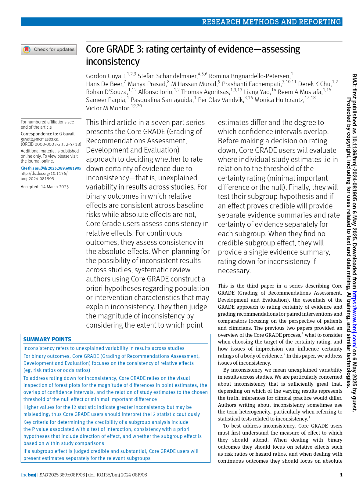
点推定値の近さと信頼区間の大幅な重なりは重要な不一致性がないことを示唆します。対照的に、点推定値の著しいばらつきと信頼区間のほとんど重なりがない場合は不一致性の可能性を示唆します。
図1の状況Aでは点推定値が近く、信頼区間もかなり重なっています。一方、状況Bでは重要な不一致性が示されており、点推定値は比較的離れており、信頼区間は重なっていません。
統計的検定
メタアナリシスでは、研究内のばらつき（例：信頼区間で表されるサンプリング誤差）と研究間のばらつき（例：個々の研究の点推定値の差）があります。不一致性を評価する最も一般的な方法の一つがI²値(2)で、これはメタアナリシスで観察される全変動のうち研究間の差異による割合を推定します。
I²値は0%から100%の範囲で、値が高いほど研究結果の不一致性への懸念が大きくなります。ただし、高いI²値は潜在的な不一致性を示唆するに過ぎず、エビデンスの確実性を下げる決定的な要因としてではなく、あくまで初期の指標として扱うべきです。
また、CochranのQ検定も不一致性を検定する方法で、すべての研究が同じ効果を示しているという帰無仮説を検証し、p値を提供します。p値が小さいほど、観察された差異が偶然による可能性は低くなります。
不一致性がエビデンスの確実性に与える影響
不一致性は、GRADEの5つのドメインの一つであり、エビデンスの確実性を低下させる可能性があります。不一致性の深刻度に応じて、GRADE利用者は確実性を1段階、2段階、または3段階下げることがあります（重大、非常に重大、極めて重大な懸念による）。統計的検定（I²やCochranのQ検定）は不一致性の初期評価を提供しますが、確実性の判断は個々の研究の絶対効果と事前に設定された閾値や範囲との関係を検討して行います。
不一致性を評価する際の重要な判断は、個々の研究の点推定値が同じ効果範囲内にあるかどうかです。同じ範囲内にあれば、不一致性はないと判断します。統計的指標が示唆していてもです。逆に、点推定値が明確に異なる範囲に分かれている場合は不一致性が存在すると考えられます（Figure 2）。
Figure 2 – 不一致性評価の重要な判断。
両方のプロットでI²値とCochranのQ検定のp値は統計的異質性を示しています。しかし、左のプロットでは結果が不一致であるのに対し、右のプロットでは統計的異質性があっても効果は無視できるか重要でない効果を示しており、一致しています。
なお、重大な不確実性がある場合、点推定値が異なる範囲に入ることがありますが、これは単にランダムな変動によるもので、研究間の重要な違いを反映しないこともあります。このような場合、同じ問題に対して不一致性と不確実性の両方で確実性を二重に下げることは避けるべきです（後述の不一致性と不確実性の重複参照）。
図2の左のプロットでは、2つの研究が小さな利益を示し、他の2つは重要な効果なしを示しており、重大な不一致性を示しています。この不一致性が事前に設定された少数のサブグループ仮説で説明できない場合、GRADE利用者は確実性を1段階下げるべきです。
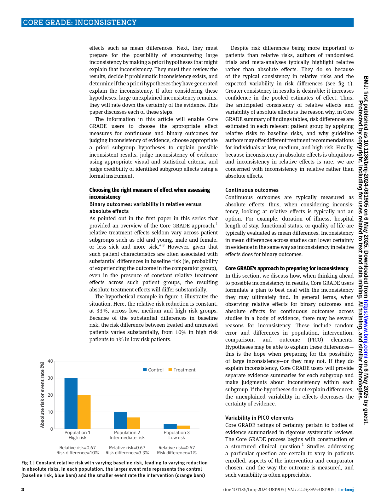
右のプロットでは信頼区間の重なりは限定的で、I²は高く、CochranのQ検定も統計的に有意ですが、すべての点推定値は無視できるか重要でない効果を示しています。したがって、不一致性に関する重要な懸念はなく、確実性を下げる必要はありません。
経験的には、重要な不一致性は稀であり、研究は通常特定の閾値や範囲内に集中します。しかし、研究の効果推定値が複数の閾値を超えて分かれている場合は、不一致性により2段階以上の確実性低下が適切な場合があります。
実践的なアドバイス
二項アウトカムの場合、不一致性は伝統的にフォレストプロット上の相対効果の視覚的検査で評価されてきました。しかし、意思決定の文脈では絶対効果の推定値が中心的役割を果たし、確実性評価の基盤となるべきです。
相対効果を絶対効果に変換する推奨方法は、すべての研究で共通の適切なベースラインリスクに相対効果推定値（およびその95%信頼区間）を乗じることです。この線形変換は推定値の数学的性質を保持します。したがって、相対効果に不一致性がなければ、絶対効果にも不一致性は生じません。
これは、各研究のベースラインリスクを用いてリスク差を計算する方法とは異なります。後者はベースラインリスクの重要な違いがある場合に、相対効果にはない絶対効果のばらつきを生じさせる可能性があります。
これらの点を踏まえ、二項アウトカムの不一致性評価には、相対効果に適切なベースラインリスクを乗じる方法が推奨されます。この計算はソフトウェアを使うか手動で行うことができます。すべての研究の相対効果を絶対効果に変換する代わりに、相対効果のばらつきが最も大きい研究を優先的に評価する方法もあります。
不一致性と不確実性の重複
固定効果モデルに基づくメタアナリシスは、プール推定値の信頼区間を研究内変動（サンプリング誤差）だけを考慮して計算します。一方、ランダム効果モデルは研究間変動（不一致性の原因）も考慮します。
不一致性がない場合、固定効果モデルとランダム効果モデルの信頼区間は同じです。しかし、重要な不一致性がある場合、ランダム効果モデルの信頼区間は広くなります。実証データは、不一致性がある場合にランダム効果モデルの推定値が複数の閾値を超える可能性が高いことを示しています。したがって、不確実性と不一致性は密接に関連しており、同じ問題に対して確実性を二重に下げることを避けることが重要です。
Figure 3 – 不一致性と不確実性の重複。
固定効果モデルは研究内変動のみを反映し、ランダム効果モデルは研究内および研究間変動の両方を考慮します。
図3では、固定効果モデルを用いた場合、プール推定値から計算された絶対効果は精密で小さな利益の範囲内に完全に収まっています。しかし、ランダム効果モデルを適用すると、絶対効果の信頼区間は2つの閾値をまたぎます。この場合、確実性を二重に下げることは避けるべきです。研究の限界、間接性、出版バイアスに懸念がない場合、この例ではGRADE利用者は確実性を2段階下げるべきです。この2段階の低下は、不一致性（研究推定値が1つ以上の閾値を超えて分かれている）、不確実性（絶対効果が2つの閾値をまたぐ）、またはその両方に起因します。2段階以上の低下は過剰なペナルティとなります。
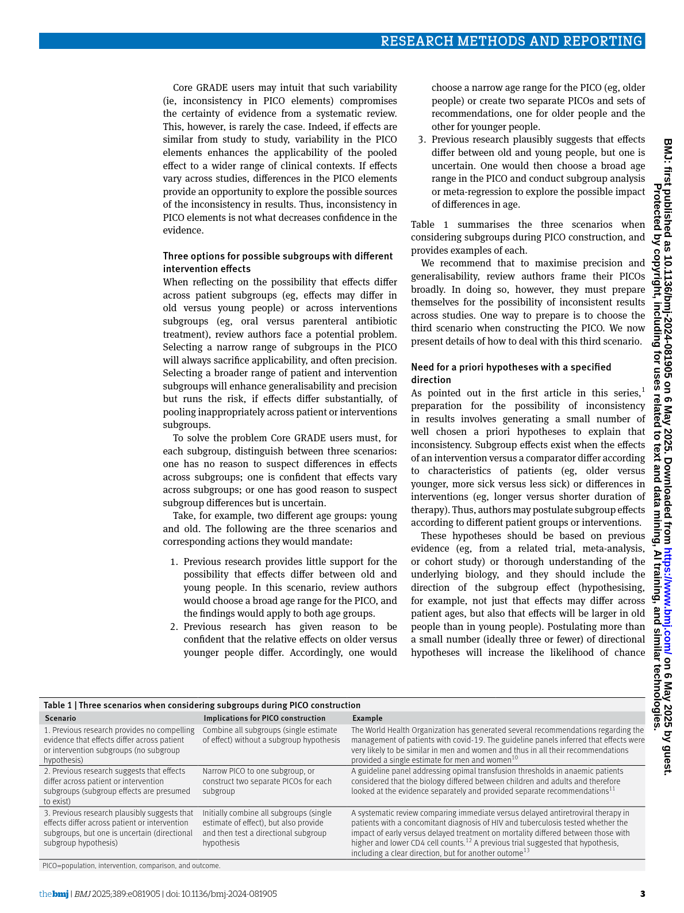
介入研究における不一致性評価の簡易ガイド
- I²やCochranのQ検定などの統計的指標が不一致性を示さない場合、このドメインの評価はここで終了し、エビデンスの確実性を下げる必要はありません。
- しかし、これらの検定でわずかな不一致性が示された場合は、さらなる調査が必要です。これは、不一致性が事前に設定された閾値に対して重要かどうかを評価し、限られた数の事前定義されたサブグループ仮説を検討することを含みます。信頼できる仮説や証拠で不一致性が説明できる場合はサブグループ解析を行います。不一致性が説明できない場合は、エビデンスの確実性を下げるべきです。
ステップ1 – 閾値の数を決定する
不一致性評価の最初のステップは、確実性評価に用いる閾値の数を決定することです。
a) 効果が特定の閾値の一方にあるか（例：介入効果が少なくとも小さな利益か）を知りたいのか、
b) 効果が特定の範囲（例：無視できる効果、小さな利益、中程度の利益、大きな利益など）にあるかを知りたいのか。
これらの閾値は合意や実証的証拠に基づいて決定し、その設定方法を透明に報告します。
中間ステップ（二項アウトカムのみ）
適切なベースラインリスクと相対効果からすべての研究の絶対効果推定値を計算します。
ステップ2 – 確実性評価の対象を決定する
確実性評価の対象を特定します。通常は絶対効果の点推定値が位置する範囲です。
ステップ3 – エビデンスを評価する
個々の研究の絶対効果推定値が大部分同じ範囲内にあるか、1つ以上の閾値で分かれているかを検討します。また、不一致性が少数の信頼できるサブグループ仮説で説明できるかも考慮します。
ステップ4 – 確実性を下げるかどうか決定する
不一致性が説明できない場合、観察された不一致性の深刻度に応じて確実性を1段階、2段階、または3段階下げます。
メタアナリシスでランダム効果モデルを使用しており、絶対効果の95%信頼区間がすでに1つ以上の閾値をまたいでいて不確実性で確実性を下げている場合は、不一致性でさらに確実性を下げる必要はないかもしれません。
（以上）
コアGRADE フローチャート
以下のフローチャートと図は、CoreGRADEシリーズ論文から抽出したものです。画像をクリックすると拡大表示されます。
図1: 不一致性(Inconsistency)の評価アルゴリズム — ステップバイステップのフローチャート

図2: フォレストプロットの視覚的評価 — 一貫性のある結果と不一致な結果

図3: 不一致性と不確実性の重複 — 両ドメインの関係

詳細解説を読み込み中...
不確実性（Imprecision）
不確実性（Imprecision）
著者: M. Hassan Murad, Ignacio Neumann, Jan Brozek, Miranda Langendam, Philipp Dahm, Holger J. Schünemann
グラフィックス著者: Carlos Cuello
最終更新日: 2025年8月21日
重要メッセージ
不確実性（Imprecision）はGRADEの8つのドメインの一つであり、エビデンスの確実性を下げる可能性のある5つのドメインのうちの一つです。リスク差や平均差などの絶対的推定値の周囲の信頼区間は、不確実性を評価するための主要なツールです。これらの信頼区間が事前に設定された閾値をまたぐ場合（理想的には分析前に設定されているべき）、GRADEユーザーはエビデンスの確実性を下げるべきです。さらに、大きな効果が信頼区間に基づいて精度が高いように見えても、エビデンスが十分に堅牢かどうかを評価することが重要です。この評価は、解析された参加者数やイベント数の合計に依存します。効果推定が少数の参加者やイベントに基づく場合、不確実性により確実性を下げることが妥当な場合があります。
不確実性とは何か？
効果の推定値は、特定の質問に答えるために利用可能なエビデンスの集合を代表する一つ以上の研究から導かれます。研究はより大きな対象集団のサンプルであるため、これらの推定値はサンプリング誤差（ランダム誤差とも呼ばれる）による不確実性を伴います。この不確実性は効果の点推定値の周囲の信頼区間に反映されます。信頼区間が広がるほど、推定値の精度（確実性）は低下します。
直感的には、少数のエビデンスに基づく推定値は、多数のエビデンスに基づく推定値よりも不確実性が高いですが、不確実性に影響を与える他の要因もあります。二値アウトカムの場合、不確実性は以下のいずれかにより減少します（信頼区間が狭まる）：
a) イベント数の増加
b) 総サンプルサイズの増加
c) 効果サイズ（群間差）の増大
連続アウトカムの場合、不確実性はサンプルサイズの増加や個々の測定値のばらつきの減少により減少します。
介入に関する研究での不確実性の評価方法
エビデンスの確実性と不確実性の概念は、介入効果を測定するための定義済みの閾値や範囲の存在に密接に関連しています。不確実性に関する判断は主に信頼区間と、その信頼区間が事前に設定された特定の閾値をまたぐかどうかに基づきます(1)。これらの閾値は、過去の実証研究に基づくか、関連する利害関係者間のコンセンサスによって設定されることがあります(1)。
不確実性がエビデンスの確実性に与える影響
推定値の信頼区間が広がると、重要な意思決定の閾値をまたぐ可能性が高まり、GRADEユーザーは確実性の評価対象が真実を表しているかどうかに不確実性を感じます(2,3)。したがって、不確実性はGRADEの確実性を下げる5つのドメインの一つです。不確実性の深刻度に応じて、確実性は1段階、2段階、あるいは3段階下げられることがあり、それぞれ「深刻」「非常に深刻」「極めて深刻」な懸念を反映します(2,3)。
2つの閾値に基づく判断
GRADEユーザーは、利益と害のそれぞれに対して1つずつ、計2つの閾値を設定して精度を判断することがあります。これらの閾値は、最小重要差（MID）であったり、Evidence to Decision（EtD）フレームワークにおける無視できる効果と小さな効果の境界に類似したもの、またはその他の関心のある閾値であることがあります。
2つの閾値のみを用いると評価が単純化され、エビデンスの確実性が高くなる場合がありますが、効果の大きさを推定せずに利益や害の有無のみを示すため、意思決定に必要な効果の大きさの情報が不足するという欠点があります(4)。意思決定者がEtDのように効果の大きさ（小、中、大）について詳細な情報を必要とする場合は、追加の閾値を考慮する必要があります。
不確実性は、絶対効果推定値の信頼区間がいくつの閾値をまたぐかによって判断されます。
図1 – 2つの閾値に基づく判断
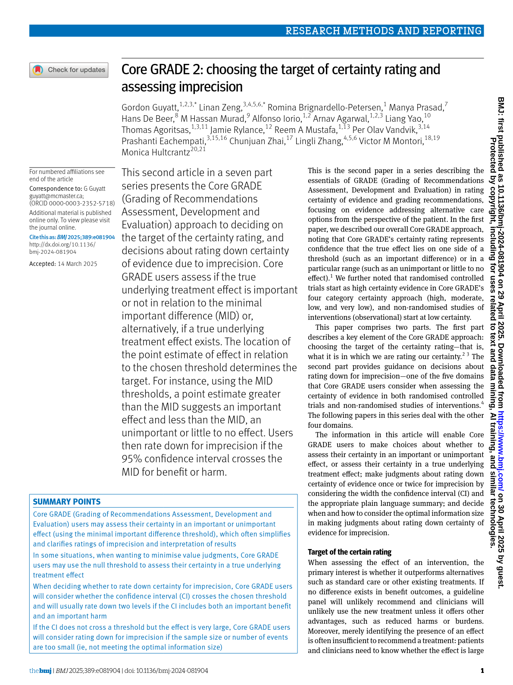
図は4つの統合推定値と2つの意思決定閾値を示しています。詳細は本文を参照してください。
- 推定値1の信頼区間は利益と害の両方の閾値をまたいでおり、重要な効果がない可能性や害がある可能性を排除できません。
- 推定値2の信頼区間は小さな/無視できる効果の閾値（MID）をまたいでおり、重要な効果がない可能性を排除できません。
- したがって、推定値1と2は不確実であり、GRADEユーザーは観察された効果が偶然の産物である可能性を排除できません（推定値1と2は重要な効果なし、推定値1は害の可能性も含む）。
- 一方、推定値3と4は選択された閾値に基づき精度が高いと判断されます。推定値3は全ての妥当な値が小さな/無視できる効果の閾値を超えており利益を示唆します。推定値4は全ての妥当な値が利益と害の小さな/無視できる閾値内にあり、重要な差や効果がないことを示します。
不確実性の判断は信頼区間がまたぐ閾値の数（無効果は除く）に基づきます。推定値1は2つの閾値をまたいでいるため非常に深刻な不確実性として2段階の評価下げが適切です。推定値2は1つの閾値のみをまたいでいるため深刻な不確実性として1段階の評価下げが適切です。
実践的アドバイス
統計的有意性の解釈に関する一般的な誤解の一つに、信頼区間と無効果線の関係があります。多くの人は信頼区間が無効果線をまたぐ場合、介入に効果がないと誤解しますが、これは信頼区間の意味を単純化しすぎています。
信頼区間は真の効果が存在する可能性のある範囲を示し、推定値の不確実性を表しています。信頼区間が無効果線をまたぐことは効果がないことを決定的に示すものではありません。意味のある効果がないと結論づけるには、信頼区間全体が利益と害の両方における無視できる効果の事前定義された閾値内に収まっている必要があります。
6つの閾値に基づく判断
EtDフレームワークのように効果の大きさの範囲に複数の閾値が含まれる場合、不確実性の評価はより詳細になります(2)。この方法は、特定のアウトカムに対する効果の大きさが介入の使用判断に影響を与える場合に特に有用です。また、複数アウトカムの効果をバランスさせたり、費用など他の結果を考慮する場合にも適しています(2)。
例えば、肺がんに対する化学療法の使用判断は、生存利益が大きいか小さいかによって異なるかもしれません。両者ともMID（小さな効果）閾値を超えていても、化学療法は一般に重要な害や副作用を伴うため、効果が大きい場合に使用や推奨がなされやすいです。
不確実性の判断は引き続き信頼区間がまたぐ閾値の数に基づきます(2)。
図2 – 6つの閾値に基づく判断

図は4つの統合推定値と6つの意思決定閾値を示しています。詳細は本文を参照してください。
- 絶対推定値1は範囲を定義する閾値を一つもまたいでいないため評価下げは不要です。
- 推定値2、3、4はそれぞれまたぐ閾値の数に応じて1段階、2段階、3段階の評価下げが適切です(2)。
実践的アドバイス
無効果は関連する閾値か？
意思決定の文脈では、「無効果」線は必ずしも有用な閾値ではありません。なぜなら、意思決定は複数のアウトカムに依存し、非常に小さな効果サイズは患者や利害関係者にとって重要でない場合があり、また真の無効果は測定不可能（無効果と呼ばれるものは実際には無効果周辺の極めて小さな範囲）だからです。ただし、介入開発の初期段階など、潜在的な負の結果がまだ十分に検討・理解されていない場合は、介入が正または負のいずれかの効果を持つかどうかを判断することが主な焦点となり、この段階では「無効果」線が一時的な閾値として機能することがあります。
概念的には、「無効果」線を閾値として用いることは、小さな/無視できる効果や最小重要差（MID）の閾値が「無効果」線と一致していることを前提としています。
不確実性の評価に関する追加の考慮事項
二値アウトカムで大きな相対効果と閾値をまたがない信頼区間の問題
小規模研究で二値アウトカムにおいて大きな相対効果を示し、信頼区間が狭く精度が高いように見える場合がありますが、参加者数やイベント数が非常に少ないため結果は脆弱であり、数人の参加者の結果が異なれば大きく変わる可能性があり、偶然の産物である可能性もあります。この現象はオッズ比や相対リスクの信頼区間の計算方法に起因し、大きな効果に対して信頼区間が狭まる傾向があるためです(5)。
GRADEユーザーが信頼区間が関心のある閾値をまたがず（信頼区間に基づく不確実性の評価下げの理由なし）、効果が十分に大きい（例：相対リスク減少または増加が50%以上）場合、レビュー情報サイズ（RIS）を用いて解析の検出力が十分かどうかを確認することが重要です(6)。
レビュー情報サイズ（RIS）
レビュー情報サイズは従来のサンプルサイズ計算に基づき、予想される大きな効果を示すために必要な参加者数を推定します(5,6)。この数値はフォレストプロット上に大・中・小効果の閾値とともに示すことができます。
レビューの実際のサンプルサイズもフォレストプロットに示し、実際のサンプルサイズと観察された効果推定値の間の線がまたぐ閾値の数に応じて不確実性の評価下げの段階数を決定します。
図3 – 少数のイベントに基づく大きな相対効果
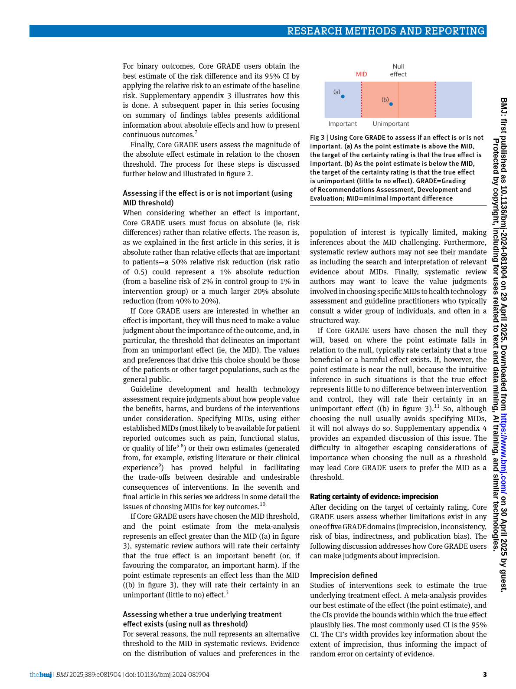
図3は仮想的な状況を示しています。推定値Aは二値アウトカムのメタ解析で100人の参加者から得られました。選択された閾値に基づき推定値Aは大きな効果に相当しますが、参加者数が少ないため、この効果は非現実的に大きく、偶然の結果である可能性が高いです。
RISを計算すると、大効果閾値で10,044人、中効果閾値で1,116人、小効果閾値で496人が必要です。実際の参加者数（n=100）を図に示し、観察された効果と比較すると、推定値Aの線は3つの閾値をまたいでいます。したがって、信頼区間が閾値をまたいでいなくても、不確実性により3段階の評価下げが適切です。
この方法は中程度の効果にも適用可能で、例えば中効果と中・小効果閾値の差を示すためのRISを計算します。ただし、エビデンスの過剰な評価下げは避けるべきです。大きな効果が妥当で間接的エビデンスに支持されている場合、小規模サンプルでも効果推定に十分な確信を与えることがあります。
実践的アドバイス
RISは従来のサンプルサイズ計算法を用いて計算されますが、予想される大きな効果と事前定義された閾値との違いを示すために必要なサンプルサイズを推定します。例えば、大きな効果が観察されたが参加者数やイベント数が少ないためランダム誤差の懸念がある場合、RISは予想される真の大きな効果と大・中・小効果閾値との違いを確認するために必要なサンプルサイズを推定します。なお、RIS計算の基となる予想される大きな効果はGRADEユーザーが仮定するものであり、観察された効果ではありません。予想される大きな効果は大効果閾値に近いため、この小さな差を示すには大きなサンプルサイズが必要ですが、中・小効果閾値に近づくにつれて差が大きくなり、必要なサンプルサイズは減少します。
非常に低いベースラインリスクのシナリオ
ベースラインリスクが非常に小さい場合（<5%）、相対効果の信頼区間は広いかもしれませんが、絶対リスクの信頼区間は狭く、意思決定に十分な精度を持つことがあります。この場合、レビュー情報サイズが満たされていなくても、不確実性による評価下げは控えることが適切な場合があります。これは、ベースラインリスクが非常に小さい場合、相対効果がどのように変化しても意思決定に用いる絶対効果推定値は大きく変わらないためです(3,5)。ただし、これは研究が十分な追跡期間を持ち、新規イベントの同定が厳密に行われている場合に限ります（イベント数が少ないのが短期間の追跡や報告不足によるものでないこと）。
不確実性と不一致のドメインの重複
メタ解析で一般的に用いられるランダム効果モデルの信頼区間は、研究間分散（across-study variance）と研究内分散（within-study variance）から計算されます。研究間分散は点推定値間の差異を表し、研究内分散は含まれる研究の標準誤差を表します。したがって、重要な不一致（大きな研究間分散）がある場合、ランダム効果モデルは固定効果モデルよりも広い信頼区間を生成します。つまり、ランダム効果モデルでは不一致が信頼区間を広げ、推定値の精度を低下させます。
GRADEユーザーはランダム効果モデルを使用する際、この「二重カウント」に注意し、説明不能な重要な異質性があり、かつランダム効果モデルと固定効果モデルの両方で不確実性が認められる場合のみ、不一致と不確実性の両方で評価下げを行うべきです。
介入に関する研究での不確実性評価の簡易ガイド
- 閾値の数を決定する
不確実性を評価する最初のステップは、エビデンスの確実性を評価するために使用する閾値の数を決定することです。
a) 効果が特定の閾値の一方にあるか（例：介入効果は少なくとも小さな利益か）を知りたいのか、
b) 効果が特定の範囲内にあるか（例：無視できる、小、中、大の利益か）を知りたいのか。
これらの閾値はコンセンサスや実証的エビデンスから得て、設定方法を透明に報告してください。
- 中間ステップ（二値アウトカムのみ）
適切なベースラインリスクと相対効果またはメタ解析推定値から絶対効果推定値と信頼区間を計算します。
- 確実性評価の対象を決定する
通常は絶対効果の点推定値がどこに位置するかを特定します。
- エビデンスを評価する
信頼区間がまたぐ関連閾値の数を判断します。
- 評価下げの判断
またいだ閾値の数に応じて確実性を0～3段階下げます。
- さらなる分析
効果が大きいまたは中程度でイベント数が少ない場合は、レビュー情報サイズ（RIS）を用いて小・中・大効果に必要なサンプルサイズを確認し、追加の評価下げが必要か判断します。
以上がGRADEアプローチにおける「不確実性（Imprecision）」の評価に関するガイドラインの日本語訳です。
コアGRADE フローチャート
以下のフローチャートと図は、CoreGRADEシリーズ論文から抽出したものです。画像をクリックすると拡大表示されます。
図1: 確実性評価のターゲット決定アルゴリズム

図2: Imprecision評価の詳細フローチャート

図3: OIS（最適情報量）の評価フローチャート

詳細解説を読み込み中...
Dissemination bias（情報発信バイアス）
Dissemination bias（情報発信バイアス）
著者: Ingrid Toews, Matteo Bruschettini, Elie Akl, Nicole Skoetz, Miranda Langendam, Pablo Alonso, Jun Xia, Philipp Dahm, Joerg J Meerpohl, Matthew J Page
グラフィック作成者: Carlos Cuello
最終更新日: 2025年8月14日
Key message（重要メッセージ）
Dissemination Bias（情報発信バイアス、別名Publication Bias）は、GRADEの8つのドメインの一つであり、証拠の確実性を評価する際に評価を下げる可能性のある5つのドメインの一つです。このドメインは、研究結果のアクセス可能性がその結果の性質によって左右されているかどうかを評価します。情報発信バイアスの有無を判断するのは非常に難しいものの、システマティックレビューで用いられる方法、証拠の特性、および特定の統計的手法が、証拠の確実性に対する影響を判断する際に役立つことがあります。
What is dissemination bias?（情報発信バイアスとは何か？）
情報発信バイアスは、研究結果のアクセス可能性がその結果の性質によって決定される場合に発生します(1)。このバイアスは、システマティックレビューのメタアナリシスや記述的要約から系統的に研究が欠落する原因となり、効果の総合推定値が過小評価または過大評価される結果をもたらすことがあります。
対象となる研究が特定されない主な理由は、研究が未発表であったり、流通の限られたジャーナル、主要データベースに登録されていない雑誌、学会抄録や学位論文などで不明瞭に発表されている場合です。情報発信バイアスは、著者・研究者、スポンサー、資金提供者、査読者、ジャーナル編集者など、情報発信プロセスに関わる関係者が「不利」と判断した研究や結果の発表を意図的に控える場合に生じる可能性があります(2,3)。
この選択的発表の現象を表す用語として、「reporting bias」や「non-reporting bias」などが使われてきました。GRADEは当初「reporting bias」を用いていましたが、Cochraneとの整合性を図るため「publication bias」を採用しました。しかし、近年のエビデンスを踏まえ(4–7)、GRADEは現在「dissemination bias」という用語を提案しています（表1に情報発信バイアスの異なる原因を示します）。
Table 1 - Dissemination bias and related sources of bias
（表1 - 情報発信バイアスおよび関連するバイアスの種類）
| バイアスの種類 | 説明 |
|---|---|
| ------------------------- | ---------------------------------------------------------------------------------------- |
| Publication bias | 特定の効果の強さや方向性を示す研究が、顕著な結果を示さない研究よりも発表されやすい。 |
| Time-lag bias | 顕著な結果を示す研究は、注目度の低い結果よりも早く発表される傾向がある。 |
| Language bias | 顕著な結果を示す研究は、国際誌よりも英語で発表されやすく、その結果、アクセスしやすくなる可能性がある。 |
| Grey literature bias | 顕著でない研究結果が、査読付きジャーナル以外の媒体で発表されることが増加する。 |
| Truncation bias | 報告書、書籍、学位論文などの媒体で発表される研究は、文字数制限のある媒体よりも詳細な結果を報告しやすい。 |
| Citation bias | 顕著な結果を示す研究は引用されやすく、エビデンス統合に含まれやすい。 |
| Multiple publication bias | 顕著な結果が複数の出版物に重複して発表され、検出されない場合、エビデンス統合にバイアスをもたらす。 |
| Selective reporting of results | 顕著な結果のみを報告する選択的なアウトカム報告。 |
How to evaluate dissemination bias in studies about interventions
（介入研究における情報発信バイアスの評価方法）
介入に関するシステマティックレビューの文脈では、情報発信バイアスを検出するためのさまざまな方法があります。エビデンス統合の経験と内容に関する専門知識が、証拠の特性をレビューする際に情報発信バイアスを検出する鍵となります。
Within review methods（レビュー方法内で）
システマティックレビューの著者が包括的な検索手法を用いなければ、未発表の研究や、非索引化・流通の限られたジャーナル、グレーリテラチャーに掲載された研究を見逃す可能性があります。
一般的な目安として、包括的な文献検索には臨床試験登録データベース、研究分野に関連する専門的な電子データベース、およびグレーリテラチャーを含めるべきです。臨床試験登録の検索は、RCTの特定に不可欠であり、多くの資金提供者や出版社がRCTの登録を義務付けているため重要です。
研究課題によっては、言語特化型データベースや地域特化型データベースの検索も検討すべきです(8)。
また、レビュー担当者が著者、スポンサー、資金提供者、介入の製造者、関連する意思決定者に連絡を取り、追加データや公開されていないデータの有無を問い合わせることで、関連データの完全な収集が促進されます(9)。
ただし、GRADEユーザーが自らシステマティックレビューを実施せず、既存のレビューに基づいて意思決定を行う場合、検索方法だけで情報発信バイアスの可能性を評価するのは困難です。
Within characteristics of the body of evidence（証拠の特性内で）
Study design（研究デザイン）
非ランダム化研究のシステマティックレビューは、RCTのレビューよりも情報発信バイアスのリスクが高い可能性があります(10)。これは、非ランダム化研究の登録やプロトコル作成が必須または一般的でないため、未発表の非ランダム化研究を特定しにくいためです。
また、患者登録データや医療記録に基づく非ランダム化研究のレビューは、文献に現れる観察研究が全ての研究を代表しているのか、選択的な一部だけなのか判断が難しく、情報発信バイアスの影響を受けやすい可能性があります。登録データに基づく研究の報告ガイドラインの整備により改善が期待されますが(11)、現状では情報発信バイアスの有無を特定するのは困難です。
Sample size（サンプルサイズ）
小規模な研究やイベント数の少ない研究は、未発表または無視されやすい傾向があります(12)。特に、参加者数やイベント数が少ない研究の中で、介入の大きな効果を示すものが少数存在する場合、情報発信バイアスの可能性が示唆されます(13)。
ただし、未発表の小規模研究による情報発信バイアスの可能性は研究分野によって異なります。大規模な人口ベースの研究が主流の分野では、小規模研究の欠落は見逃されにくく、また大規模研究が証拠の大部分を占める場合、小規模研究の影響は限定的です。
Complexity and cost of conducting studies（研究の複雑さと費用）
研究の複雑さや費用も、系統的に証拠が欠落する可能性に関連します。研究費用が高く、方法が複雑な分野では欠落は少ない傾向にあります。一方、実施が容易で費用の低い研究は、結果が「ネガティブ」または不利と判断された場合に未発表となる可能性が高いと考えられます。
かつては、産業資金提供研究は情報発信バイアスの原因とされてきました。規制承認を目指す介入の研究は、肯定的かつ統計的に有意な結果が出た場合に発表されやすく、否定的な結果は未発表または入手困難になる傾向がありました。しかし現在では、産業資金提供の試験は非規制介入の試験よりも臨床試験登録で結果を報告する傾向が強いことが示されています(14)。したがって、産業資金提供試験の統合が必ずしも非産業資金提供試験より情報発信バイアスのリスクが高いとは限りません。非ランダム化研究についてはまだ明確ではありません。
Timeframe for sampling studies and novelty of the intervention（研究の収集期間と介入の新規性）
新興の研究分野では、肯定的な結果を示す研究が非有意な結果よりも早く発表されるため、情報発信バイアスが起こりやすいです。そのため、初期段階のシステマティックレビューは、新しい介入の効果を過大評価する可能性があります。
Publication outlet of studies（研究の発表媒体）
学会抄録のみ、報告書やグレーリテラチャーのみで発表された研究を含めて評価することは、情報発信バイアスの有無を判断する手がかりになります。もし抄録やグレーリテラチャーのみの研究が、完全に発表された研究よりも効果推定値が小さい場合、情報発信バイアスの存在を示唆します(15)。
Graphical and statistical approaches and tests to detect the possibility of dissemination bias
（情報発信バイアスの可能性を検出するためのグラフィカルおよび統計的手法）
これまで述べた要因に基づくシグナルに加え、情報発信バイアスのリスクを評価するために、ファンネルプロットやファンネルプロット非対称性の統計検定などのグラフィカル・統計的方法が提案されています。ただし、これらのグラフは慎重に解釈する必要があります。
ファンネルプロットは、個々の研究の介入効果推定値を、研究の大きさや精度の指標（通常は標準誤差の逆数）に対してプロットしたものです。理想的には、プロットは左右対称の逆三角形（ファンネル）に近い形状を示し、小規模研究の効果推定値はグラフの下部でより広く散らばります。
情報発信バイアスがある場合、例えば小規模研究で介入に不利な効果を示すものが未発表であると、ファンネルプロットは非対称となり（グラフの下隅に空白が生じる）、バイアスの存在を示唆します。
Figure 1 – 未発表研究による非対称なファンネルプロット。ファンネルプロットの非対称性は、介入による潜在的な害を示す未発表の小規模研究の存在を示唆している。

ファンネルプロットとその統計検定は、「小規模研究効果」（small-study effects）を調査する一般的手段と考えられます。小規模研究効果とは、小規模研究で推定される介入効果が大規模研究と異なる傾向のことです。これは、小規模研究の報告が結果の性質（publication bias）により選択的に行われる場合だけでなく、小規模研究で介入がより忠実に実施されて効果が大きくなる場合、研究デザインや解析の質の問題、研究間の異質性、偶然などによっても生じます(16)。
ファンネルプロットの非対称性の原因を区別するために、コンター強調ファンネルプロット（contour-enhanced funnel plot）が用いられます(17)。このプロットは、研究推定値の統計的有意性と、欠落していると考えられる研究の位置を示します。もし欠落している研究が統計的に有意かつ介入に有利な領域にある場合、非対称性の原因はpublication bias以外の要因である可能性が高いと判断されます。
Impact of dissemination bias on the certainty of evidence
（情報発信バイアスが証拠の確実性に与える影響）
情報発信バイアスへの懸念が高まると、GRADEユーザーは評価対象の確実性が真実を正確に反映しているか自信を持てなくなります。そのため、情報発信バイアスはGRADEの確実性を下げる5つのドメインの一つです。GRADEでは、非常に重大または極めて重大な懸念がある場合に、確実性を2段階または3段階下げる運用方法を検討しています。これは、情報発信バイアスが二元的な現象ではなく、定量化可能なものであるため合理的なアプローチです。
情報発信バイアスの評価には、これまで述べたレビュー方法、証拠の特性、グラフィカル・統計的手法などのシグナルを総合的に考慮します。複数のシグナルが情報発信バイアスを示唆する場合（例：初期の肯定的な小規模研究の存在、ファンネルプロットの著しい非対称性など）、確実性を下げることが適切と考えられます。
Overlap of the domains dissemination bias and imprecision
（情報発信バイアスと不確実性ドメインの重複）
少数の試験で参加者やイベント数が少ないにもかかわらず、介入効果が大きく示される場合、偶然により信頼区間が狭くなることがあります。これは、相対リスクやオッズ比が大きな効果サイズで狭い信頼区間を持つ傾向と関連しています。
本書の不確実性（imprecision）ドメインの章では、この状況への対応方法が示されています。一般的に、GRADEユーザーは同じ問題に対して確実性を二重に下げることを避けるべきです。
Simple guide to rating dissemination bias in studies about interventions
（介入研究における情報発信バイアスの評価の簡単ガイド）
- Step 1 – Evaluate the evidence:
レビュー方法、証拠の特性、および可能であればグラフィカル・統計的手法に基づく情報発信バイアスのシグナルを検討する。
- Step 2 – Decide whether rating down is appropriate:
複数のシグナルが情報発信バイアスを示唆する場合は、証拠の確実性を1段階下げることが適切である可能性が高い。
（以下の追加リソースや参考文献、リンク・動画などのナビゲーション用テキストは翻訳対象外のため省略）
コアGRADE フローチャート
以下のフローチャートと図は、CoreGRADEシリーズ論文から抽出したものです。画像をクリックすると拡大表示されます。
図1: 公開バイアス(Publication Bias)の評価アルゴリズム

図2: ファンネルプロットの解釈 — 対称と非対称

詳細解説を読み込み中...
Evidence to Decisionフレームワーク入門
Evidence-to-Decisionフレームワーク入門
著者: Jessica Beltran, Ignacio Neumann, Sue Brennan, Joerg Meerpohl, Marina Davoli, Elie Akl, Philipp Dahm, Nicole Skoetz, Jun Xia, Holger J. Schünemann, Pablo Alonso Coello
グラフィック作成: Carlos Cuello
最終更新日: 2026年3月10日
重要メッセージ
GRADE Evidence-to-Decision（EtD）フレームワークは、利益と害、価値観、資源利用、公平性などの関連するすべての基準を考慮するよう意思決定者を導き、臨床推奨、保険適用の決定、公衆衛生や医療システムの意思決定（推奨を含む）など多様な意思決定タイプに適応可能な、構造化かつ透明性の高い根拠に基づく医療意思決定の支援プロセスを提供します。単純な2者比較から複数の選択肢や戦略を含む複雑なシナリオまで適用可能です。
はじめに
医療における意思決定はしばしば複雑であり、望ましい健康効果と望ましくない健康効果、資源の使用、公平性の考慮、受容性や実現可能性のトレードオフを伴います。臨床医、市民、政策立案者はこれらの要素を総合的に判断して情報に基づく決定を下す必要がありますが、そのプロセスはしばしば体系的でなく不透明です。その結果、推奨は一貫性や透明性、信頼性を欠くことがあります。
この課題に対応するため、GRADEワーキンググループはEvidence-to-Decision（EtD）フレームワークを開発しました。これらのフレームワークは、重要な基準の体系的評価を通じてユーザーを導き、構造化かつ透明性の高い意思決定を支援します。具体的には、エビデンスの確実性、利益と害のバランス、関係者の価値観、受容性、公平性、実現可能性などの文脈的要因を考慮することを促します。最終的に、EtDフレームワークは根拠に基づき、明示的で説明責任のある意思決定を促進します。
これらは臨床推奨、保険適用の決定、公衆衛生や医療システムの意思決定（推奨を含む）など幅広い意思決定タイプに適用可能であり、単純な2者比較から複数の選択肢や戦略を含む複雑な評価まで対応可能です。
本章ではEtDフレームワークの使用理由、その構造、利用法、及び意義を紹介します。信頼できる推奨や保健政策の策定に関わる方々の実践的なガイドを目的としています。
EtDフレームワークの目的
EtDフレームワークは、幅広い健康関連の文脈で構造化され透明性の高い根拠に基づく意思決定を促進することを目的としています。パネルや意思決定者がすべての重要な基準を体系的に考慮することで、推奨や決定の共通のアプローチを提供します。(1)(2)
これらのフレームワークは以下の目的を果たします：
- 明確性と透明性の向上
各基準に対する判断や推奨の根拠を文書化することで、意思決定プロセスをより明示的かつ理解しやすくします。
- 一貫性とコミュニケーションの強化
利益と害の大きさ、資源の影響、公平性、実現可能性などの関連要素を異なるパネルや状況で一貫して考慮します。
- 熟議の支援
構造化された議論を促進し、推論を可視化することでグループの共通理解と合意形成を助けます。
- 適応と実施の促進
意思決定の根拠を明示的に示すため、異なる文脈への適応が容易であり、実施のための実用的ツールとして機能します。
図1 – EtDフレームワークの目的
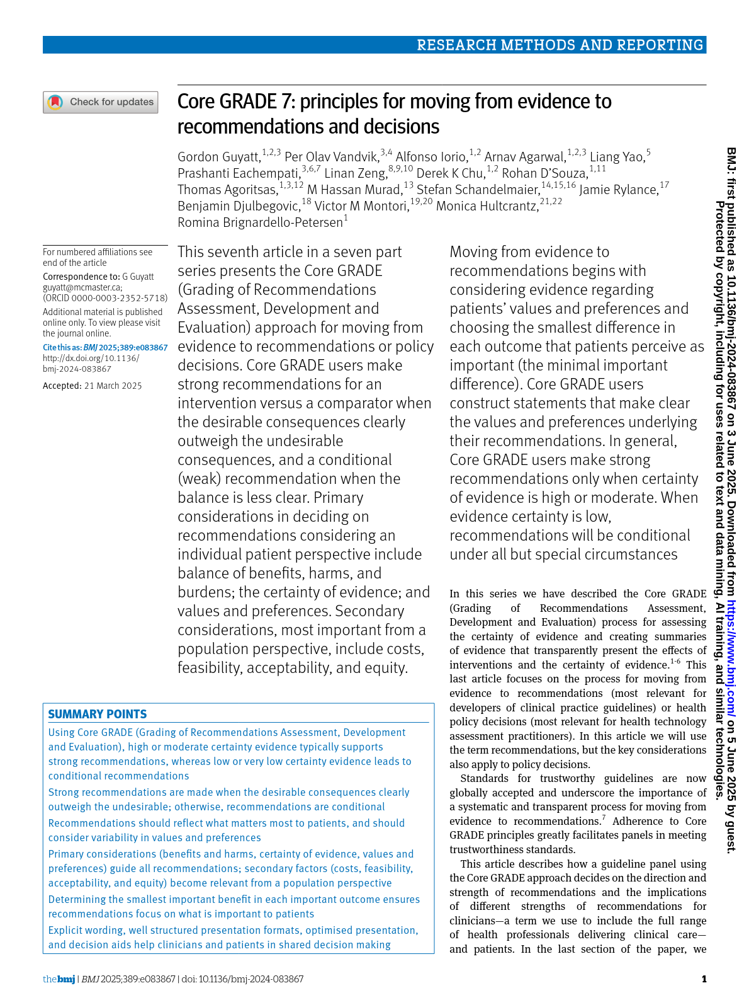
フレームワークの構造
EtDフレームワークは、エビデンスから意思決定へと進む主要な3つのステップを反映した3つの主要セクションで構成されます：質問の定式化、エビデンスの評価、結論の導出。GRADEワーキンググループはフレームワーク間の一貫性を目指していますが、健康に関する意思決定の性質は異なるため（例：臨床推奨は保険適用、公衆衛生、医療システムの決定とは異なる）、フレームワーク間で適切な差異は残ります。
重要な点として、EtDフレームワークは単純な2者比較だけでなく、複数の選択肢や戦略を含む複雑な状況にも対応できるよう設計されており、意思決定の複雑さにかかわらず透明性と構造化されたアプローチを保証します。
図2 – Evidence-to-Decisionフレームワークの3つの主要セクション
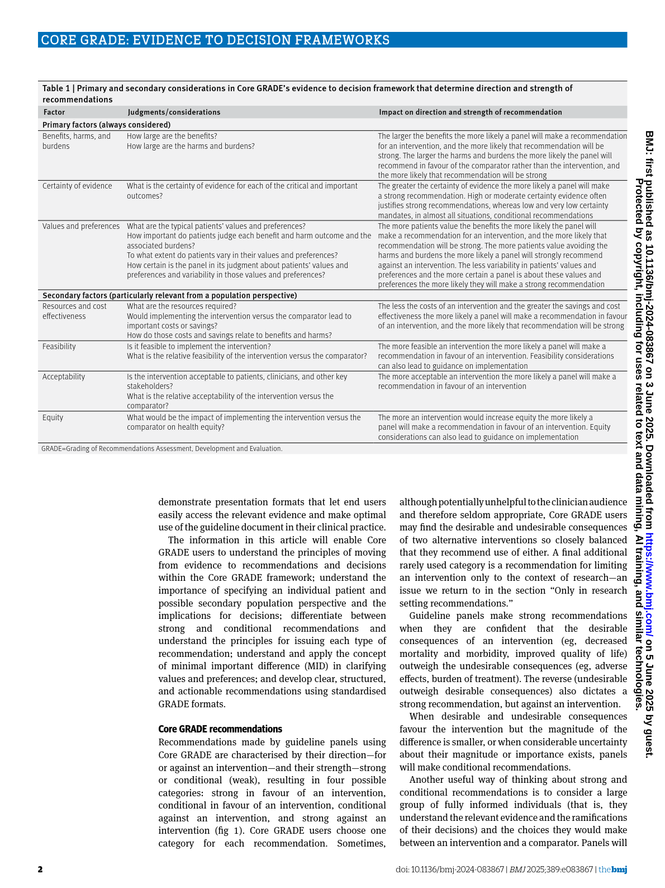
質問の定式化
あらゆる意思決定プロセスの基盤は、よく定式化された質問です。GRADE EtDフレームワークの文脈では、これは対象集団、介入、比較対象、アウトカム（PICO）を定義し、意思決定の視点と文脈を明確にすることを意味します。よく構造化された質問は、収集されるエビデンスと下される判断が関連性を持ち、意思決定に適合していることを保証します。また、質問が臨床推奨、保険適用の決定、公衆衛生や医療システムの意思決定（推奨を含む）に該当するかどうかを判断する助けにもなります。
エビデンスの評価
EtDフレームワークは、介入や選択肢を評価するための基準、各基準に対する判断、支持する研究エビデンスや追加の考慮事項を明示します。
- 研究エビデンスは、パネルの判断を情報提供するために体系的かつ明示的な方法で得られた研究からの情報を指します。
- 追加の考慮事項には、通常収集されるデータ、文脈情報、仮定、論理的議論などが含まれ、判断を支持します。
判断は、例えば高齢者や重症患者などのサブグループ間で異なる場合があり、関連する場合はサブグループ別の結論を報告します。意見の相違がある場合は異論や投票結果を記録することも可能です。
異なる意思決定タイプや視点により考慮すべき要素は異なるため、GRADEワーキンググループは個別・集団レベルの臨床推奨、保険適用の決定、診断検査、公衆衛生や医療システムの推奨など多様な文脈に合わせた基準セットを開発しています。
すべてのEtDフレームワークに共通する中心的要素は、問題の優先度評価と望ましい結果と望ましくない結果のバランス（すなわち純効果）の評価です。デフォルトのテンプレートには資源利用、費用対効果、受容性、実現可能性の考慮も含まれます。
人口視点で作成されたフレームワークはさらに公平性を扱い、最近では地球環境（planetary health）への潜在的影響も考慮しています。検査関連の決定では、患者にとって重要なアウトカムに関する直接的なエビデンスが不足している場合に、検査の正確性や下流の影響を情報提供する異なるエビデンス群の確実性に関する判断が必要です。
EtDフレームワークの重要な特徴は階層構造です。簡潔なトップレベルの判断を示し、主要な研究結果の要約など詳細情報へのリンクを提供します。これらの要約は段落形式や表形式で示され、さらに詳細なリソース（エビデンスプロファイルやSummary of Findings（SoF）テーブルなど）へのリンクが付くこともあります。この階層的アプローチは焦点を絞った熟議を支援し、パネルメンバー間の共通理解を促進し、大量の文書でユーザーを圧倒することを避けます。また、推奨の利用者が必要に応じて基礎となるエビデンスをより深く探求できるようにします。
実践的な助言
組織はEtDフレームワークに含める基準を自組織の文脈に合わせて調整できます。例えば、問題の優先度が既に検討済みの場合はこの基準を省略することもありますし、自律性や倫理的懸念を受容性などの広い領域に埋め込むのではなく独立した基準として扱うこともあります。ある環境では地球環境への影響など一部の基準が重要でないと判断され、含めない選択もあります。理想的には、除外や修正は透明性を確保するために明確に正当化されるべきです。
パネルは各基準に対する判断の根拠となる詳細な考慮事項を記録することが有用です。例えば、問題の優先度を評価する際には、その重症度、緊急性、政策的関連性、影響を受ける人数などを検討します。これらは詳細な判断セクションに記録され、研究エビデンス、文脈情報、パネルの議論に基づきます。パネルは特定の基準について事前に詳細な判断を体系的に文書化するか、説明や異論、複雑さがある場合に選択的に記録することを決めることができます。
結論の導出
結論の導出は、パネルがすべての基準にわたる判断をレビューし、その全体的な意味合いを考慮することから始まります。この総合的評価に基づき、推奨の方向性と強さ、または意思決定の種類を決定します。デフォルトのEtDテンプレートには、根拠の説明、実施に関する考慮事項、モニタリングと評価計画、研究の優先事項を記載する欄もあります。
推奨や決定は明確で簡潔かつ実行可能であるべきで、主要な判断とその根拠を反映した説明が伴います。この説明はパネルの基準にわたる評価から論理的に導かれ、どの要素が結論に最も影響を与えたかを強調することがあります。特定のサブグループで判断が著しく異なる場合は、その差異を説明し、必要に応じて当該サブグループに特化した別のEtDフレームワークを提示すべきです。
実施に関する考慮事項は、実現可能性や受容性に関連する予想される課題に対処し、それを克服するための戦略を提案し、特に複雑な介入の場合に推奨の実行に必要な指針を含めるべきです。モニタリングと評価の考慮事項は、追跡すべき指標を示し、特に公衆衛生や医療システムの文脈で実施結果をどのように評価するかを提案します。最後に、パネルは判断に影響を与えた重要な不確実性やエビデンスのギャップを解消するための研究優先事項を特定します。
課題と潜在的な解決策
GRADEワーキンググループはエビデンスから推奨へと移行するための明確な基準を開発しました。臨床および公衆衛生のガイドラインで広く用いられ、意思決定の透明性と構造化を強化しています。EtDフレームワークはこのアプローチの最新の進化形であり、国際的かつ多分野のグループによる厳格な開発、透明かつ体系的なプロセス、人々がアウトカムをどのように評価するかの明示的考慮、パネルの熟議と対象読者への伝達を促進する階層的フォーマットが強みです。
よく指摘される制約は、従来のGRADEツールに比べて複雑であることですが、この複雑さは多くの相互関連する要素を慎重に考慮する必要がある医療意思決定の現実を反映しています。実際には、質問が定義されエビデンスが準備されれば、EtDフレームワークは意思決定に要する時間を大幅に増やすものではありません。どのような構造化アプローチでも、効果的な利用には訓練と経験が必要です。
理想的には各基準は研究エビデンスに基づくべきですが、パネルはしばしばエビデンスの欠如や追加レビューを依頼するリソース不足に直面します。EtDフレームワークは使用されたエビデンスと仮定や判断が必要だった箇所を透明化します。組織は基準を調整できますが、主要な領域を除外する場合はその影響を考慮すべきです。例えば資源利用を除外すると、暗黙の判断が検証されず、実現可能性や費用負担の評価責任が最終利用者に転嫁される恐れがあります。
包括性と使いやすさのバランスを取るために多大な努力が払われており、GRADEワーキンググループは実践経験に基づきフレームワークを継続的に改良しています。多基準意思決定分析（MCDA）が一部の文脈で代替案として提案されていますが、その複雑さとリソース要求のため採用は稀です。一方、EtDフレームワークは実用的で透明かつ根拠に基づいた判断構造を提供します。最終的に、推奨や意思決定が明確に正当化され、十分に文書化され、信頼に足るものとなるよう支援し、利用者が根拠を理解し自らの文脈に適応できるようにします。
（ナビゲーション用テキストや参考文献、リンク・動画等は省略しました）
コアGRADE フローチャート
以下のフローチャートと図は、CoreGRADEシリーズ論文から抽出したものです。画像をクリックすると拡大表示されます。
図1: Evidence to Decision (EtD) フレームワークの全体構造

図2: EtDフレームワークの3つの主要セクション

詳細解説を読み込み中...
GRADE推奨
GRADE Recommendations
著者: Ignacio Neumann, Elie Akl, Joerg Meerpohl, Marina Davoli, Sue Brennan, Philipp Dahm, Nicole Skoetz, Jun Xia, Reem Mustafa, Holger J. Schünemann
グラフィック作成: Carlos Cuello
最終更新日: 2026年3月17日
重要メッセージ
GRADEアプローチは、推奨の方向性（賛成または反対）と強さによって特徴づけられる5種類の推奨を定義しています。推奨は、対象集団、介入、そして関連する場合は比較対象を明確かつ曖昧さなく示すべきです。各GRADE推奨は、標準化された実行可能な声明で構成され、解釈や実施を支援する任意の注釈およびパネルの判断理由を説明する正当化が付随します。重要なエビデンスのギャップが特定された場合は、具体的かつ実行可能な研究優先事項も併せて示すことが理想的です。
GRADEガイドライン推奨
GRADE Evidence to Decisionフレームワークは5種類のガイドライン推奨を提供します（図1）。推奨の方向性は主に、介入の純効果が比較対象に対してどのように評価されるかを反映します。ガイドラインパネルは、介入が推奨される（賛成）か推奨されない（反対）かを明確に述べるべきです。GRADEは、比較対象が2つの能動的介入（例：スクリーニング戦略A対スクリーニング戦略B）の場合に、いずれの方向にも条件付き推奨を認めています。
推奨の強さは主に、推定された純効果に対するパネルの信頼度を反映し、その結果としてほとんどの個人が推奨された行動を取るべきだとパネルがどれほど強く信じているかを示します。
図1. GRADE推奨の5種類。2つの能動的介入が比較される場合にのみ、いずれかの代替案を推奨することが適切であり、能動的治療とプラセボまたは標準治療の比較では適用されません。
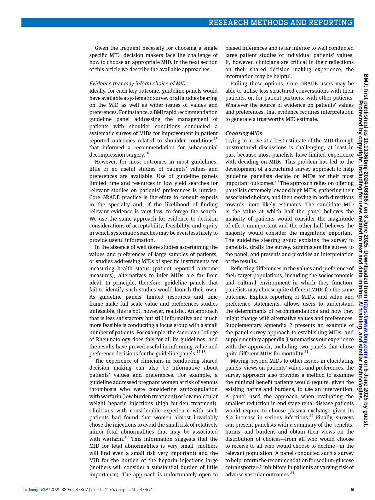
文脈的要因（資源使用やコスト、公平性、受容性、実現可能性など）も、後述するように推奨の方向性と強さの両方に影響を与えることがあります。
ガイドライン推奨はPICO質問への直接的な回答です。したがって、推奨声明は対象集団、介入、および比較対象（該当する場合）を明示的に指定し、推奨の強さを明確に示さなければなりません。
中央の選択肢（いずれかの代替案を許容する）は特に注意が必要です。これは2つの能動的介入が比較され、両者の選択が合理的な場合にのみ使用すべきです。実際には、介入と比較対象が本質的に同等と考えられる場合にこの選択肢を選びます。比較対象が非介入または標準治療の場合、介入を使用するかしないかが不明確な状態を示す中央の選択肢は、推奨の利用者にとって実用的な指針とはなりません。
実践的アドバイス
推奨を作成するグループは、エビデンスの確実性が非常に低い場合でも指針を提供する努力をすべきです。推奨の利用者は実践的な回答を求めており、ガイドライン作成者や医療技術評価機関と同じ深さでエビデンスを検討する時間や資源を持たないことが多いです。利用可能なエビデンスは、不確実性が大きい場合でも臨床医が推奨を評価し価値を認めていることを示しています。むしろ、不確実性が大きいほど、慎重に検討され正当化されたガイドライン推奨の潜在的影響は大きいと言えるでしょう。
純効果（net effect）
GRADEの文脈では、純効果は介入の望ましい健康効果と望ましくない健康効果の全体的なバランスを表し、介入によって影響を受けるアウトカムに対する個人の相対的な重要性を考慮に入れています。実際には、ほとんどの人にとって、介入の期待される利益が害を上回るかどうかを示します。
概念的には、純効果の確実性は、望ましいおよび望ましくない健康効果の大きさに関するエビデンスの確実性だけでなく、個人がそれらのアウトカムにどの程度の価値を置くかの確実性にも依存します。介入の効果が十分に推定されていても、関連するアウトカムの価値に関する不確実性が、利益と害のバランスをどれだけ確信を持って判断できるかに影響を与えます。
介入効果のエビデンスやアウトカムに対する価値の確実性が低いまたは非常に低い場合、純効果に関する全体的な確実性は限定的となり、その結果、パネルはほとんどの個人にとって利益が害を上回るかどうかについて自信を持てなくなります。
強い推奨と条件付き推奨
強い推奨
介入が純利益をもたらすという確実性が高いまたは中程度の場合（賛成の強い推奨）、または逆に純害をもたらすという確実性が高いまたは中程度の場合（反対の強い推奨）に、推奨は強くなります。
条件付き推奨
介入の純効果に不確実性がある場合に条件付き推奨が適切です。この不確実性は、効果に関するエビデンスの不確実性や限界、関連アウトカムの価値に関する不確実性、またはその両方から生じます（図2）。
条件付き推奨は強い推奨よりも一般的であり、不確実性の下での実践を導く上で重要な役割を果たします。エビデンスは、臨床医や意思決定者が条件付き推奨をよく理解し価値を認めていることを示しています。(1)
推奨の解釈
| 利害関係者 | 強い推奨 | 条件付き推奨 |
|---|---|---|
| --- | --- | --- |
| 患者および一般市民 | ほとんどの人が推奨された行動を望む。共有意思決定は適切だが、詳細な熟考は通常不要。 | ほとんどの人は推奨された行動を望むが、かなりの割合は望まない。共有意思決定が不可欠で、個人の価値観に基づき異なる選択が合理的。 |
| 臨床医 | ほとんどの患者に推奨介入を提供し、一般的に標準治療として提供すべき。 | 患者ごとに異なる選択が適切。臨床医は患者の価値観に沿った意思決定を支援すべき。 |
| 政策決定者 | ほとんどの状況で政策、品質指標、パフォーマンス指標として採用可能。 | 一部の状況や集団で適切だが、硬直的な政策や指標には不適切。 |
| ガイドライン作成者 | 介入の望ましい効果が望ましくない効果を上回る（またはその逆）ことに高または中程度の確信がある。 | 望ましい効果と望ましくない効果の間に不確実性や均衡がある。最適な選択は個人や文脈によって異なる可能性。 |
| 医療技術評価機関 | 対象集団に対して技術が明確な純利益（または純害）をもたらすことに高または中程度の確信がある。追加分析は価格交渉、予算影響、実施戦略、特定の対象集団の定義に焦点を当てる場合がある。 | 対象集団における純効果の利益と害の間に不確実性や均衡がある。保険適用や償還の決定は文脈、価値観、コスト、予算影響、実現可能性により異なり得る。 |
| 研究者 | さらなる研究が推奨の方向性を変える可能性は低いが、効果推定の精緻化、サブグループの検討、残存する不確実性の解消には価値がある。 | さらなる研究が推奨に影響を与え、その強さや方向を変える可能性がある。主要なエビデンスギャップ、サブグループ、文脈要因を対象とした研究が優先されるべき。 |
| ガイドライン適用グループ | 通常は原文のまま採用可能。重要な文脈の違いがある場合のみ修正を検討。 | 地域の文脈を慎重に評価する必要がある。基礎リスク、資源、コスト、公平性、受容性、実現可能性、集団の価値観の違いにより、推奨の強さや方向を変更することがある。 |
低または非常に低い確実性の健康効果に基づく強い推奨
いくつかの特定の状況では、いくつかの効果推定の確実性が低いまたは非常に低いにもかかわらず、純健康効果に関する不確実性が小さく、強い推奨が妥当な場合があります。これらの状況は極めて稀であり、強い推奨の広範な影響を考慮すると、ガイドラインパネルと方法論者の慎重な検討が必要です。
表2. 低または非常に低い確実性のエビデンスにもかかわらず強い推奨が適切となる例外的状況
- 破滅的状況で介入が大きな健康利益をもたらす可能性がある場合
- 典型的には死亡や永久障害など非常に深刻な結果の高い基礎リスクを伴う。
- 望ましい健康効果：潜在的に大きいが低または非常に低い確実性のエビデンスに基づく。
- 望ましくない健康効果：変動的。害に関するエビデンスは非常に低から高まで。
- 純効果：潜在的に大きな純利益。
- コスト：変動的。高コストでも強い推奨が維持される場合あり。
- 例：巨大肺塞栓症と心原性ショック患者における血栓溶解療法の使用。
- 低確実性のエビデンスが2つの選択肢で類似の利益を示すが、高または中程度の確実性のエビデンスが一方の選択肢の害またはコストが明らかに少ないことを示す場合
- 2A: 害の少なさが決定要因
- 望ましい健康効果：低または非常に低い確実性のエビデンスに基づき類似。
- 望ましくない健康効果：高または中程度の確実性のエビデンスで一方が明らかに少ない。
- 純効果：害の少ない選択肢を支持。
- コスト：決定要因ではない。
- 例：早期H. pylori陽性MALTリンパ腫患者におけるH. pylori除菌療法対放射線療法または胃切除術。
- 2B: コストの少なさが決定要因
- 望ましい健康効果：低または非常に低い確実性のエビデンスに基づき類似。
- 望ましくない健康効果：類似。エビデンスの確実性は変動。
- 純効果：類似。
- コスト：高または中程度の確実性のエビデンスで一方が明らかに低い。
- 例：学校ベースの歯科予防ケア（クリニックベースのケアと比較）。
- 低または非常に低い確実性のエビデンスが利益の可能性を示すが、中または高い確実性のエビデンスが重要な害を示す場合
- 望ましい健康効果：小さいか些細。低または非常に低い確実性のエビデンスに基づく。
- 望ましくない健康効果：中程度から大きい。高または中程度の確実性のエビデンスに基づく。
- 純効果：純害。
- コスト：決定要因ではない。
- 例：特発性肺線維症患者におけるプレドニゾロン使用。
- 高い確実性のエビデンスが2つの選択肢で類似の利益を示すが、低い確実性のエビデンスが一方の選択肢でより大きな害またはコストの懸念を示す場合
- 4A: 害の少なさ
- 望ましい健康効果：中または高い確実性のエビデンスに基づき類似。
- 望ましくない健康効果：低または非常に低い確実性のエビデンスで一方により大きな害の可能性。
- 純効果：より安全な選択肢を支持する可能性が高い。
- コスト：決定要因ではない。
- 例：妊娠計画中または妊娠中の女性における直接経口抗凝固薬の回避（胎児への潜在的害のため）。
- 4B: コストの少なさ
- 望ましい健康効果：中または高い確実性のエビデンスに基づき類似。
- 望ましくない健康効果：低または非常に低い確実性のエビデンスに基づき類似。
- 純効果：類似。
- コスト：一方が明らかに低い。
- 例：乳幼児のRSV関連下気道疾患予防のためのnirsevimab対パリビズマブの免疫化。
- エビデンスが控えめな利益を示すが、低または非常に低い確実性のエビデンスが破滅的な害の可能性を示す場合
- 典型的には死亡や永久障害など非常に深刻な結果のリスクの大幅な増加を伴う。
- 望ましい健康効果：小から中程度。エビデンスの確実性は非常に低から高まで。
- 望ましくない健康効果：潜在的に大きい。低または非常に低い確実性のエビデンスに基づく。
- 純効果：純害。
- コスト：決定要因ではない。
- 例：前立腺癌患者におけるテストステロン補充療法（癌進行の懸念）。
実践的アドバイス
介入効果に関する低確実性のエビデンスに基づく強い推奨は例外的なものとすべきです。実質的な不確実性があるにもかかわらず強い推奨が頻繁に用いられる場合は、推奨の強さが推定された純効果の不確実性と一致していない不十分なガイドラインの可能性があります。
多くの場合、低または非常に低い確実性のエビデンスに基づく強い推奨は2つの一般的な問題に起因します。第一に、間接的エビデンスや適切に実施された非ランダム化研究が十分に考慮されていない場合など、実際には確実性がより高いのに低または非常に低いと評価されていること。第二に、エビデンスの確実性が実際に低い場合にパネルが自信を過大評価していること。
資源使用に関するエビデンスの影響
介入が純利益を示す場合、ガイドラインパネルはコストや資源使用に関するエビデンスを考慮することがあります。介入の実施は必然的に機会費用を伴い、ある介入に割り当てられた資源は他の潜在的に有益な介入の資金調達や提供能力を制限する可能性があります。これらのトレードオフを無視すると、単独では効果的でもシステムレベルでは非効率的または持続不可能な介入を推奨することになりかねません。
コスト考慮の程度や深さは、ガイドライン作成組織の種類、社会的役割、規制や政策の文脈によって異なります。例えば、学術的または専門的学会は主に介入の利益と害の評価を使命とし、資源使用は直接的な資源消費の単純な推定を通じて考慮することが多いです。一方、政府や公衆衛生機関はコストエビデンスをより重視し、保険適用や政策決定のために正式な経済評価を行うことがあります。
介入が利用可能な代替案よりも著しく多くの資源を必要とする、または費用対効果が不利である場合（例：健康利益単位あたりの追加コストが高い）、パネルは資源考慮をどのように扱うかを決定しなければなりません。臨床効果に狭く焦点を当てた推奨では、高コストを実施の障壁として扱うことが一般的です。より実用的なアプローチとしては、資源使用を推奨の強さや方向の判断に明示的に組み込む方法があります。この場合、高い資源要件は条件付き推奨を正当化するか、予算制約を脅かすほどのコストであれば介入に対する反対推奨を支持することがあります。
公平性、実現可能性、受容性に関するエビデンスの影響
推奨の視点によっては、公平性、受容性、実現可能性などの他の考慮事項も関連する場合があります。専門学会など一部のパネルは主に純効果に基づいて推奨を行い、他の文脈的要因にはあまり重きを置かないことがあります。対照的に、政府や公衆衛生機関はこれらの文脈的要因をより詳細かつ明示的に考慮することが多く、これらは人口レベルの影響、実施、公平性に直接関係するためです。
表3. 2つの例示的シナリオ。文脈的要因が推奨の方向性と強さに影響を与える場合（シナリオA）と、純効果のみに基づく場合（シナリオB）。
| EtDドメイン | シナリオA | シナリオB |
|---|---|---|
| --- | --- | --- |
| 必要資源 | 利用可能な代替案より著しく多くの資源を要する介入は条件付き推奨、場合によっては反対の条件付き推奨を正当化する。 | 資源の影響は実施上の考慮事項として認識され、価格交渉、調達戦略、規模の経済、代替資金調達などでコスト削減と負担軽減が期待される。 |
| 費用対効果 | 不利な費用対効果は条件付き推奨または場合によっては反対の条件付き推奨を支持する。 | 費用対効果の懸念は実施上の考慮事項として認識され、価格交渉、調達戦略、対象サブグループの選定、提供モデルの変更で改善が期待される。 |
| 健康の公平性 | 健康格差を拡大する可能性のある介入は条件付き推奨または一部の状況で反対の条件付き推奨を正当化する。 | 公平性の問題は文書化されるが、政策決定者がアクセス障壁を解消し潜在的な不公平を緩和することが期待される。 |
| 受容性 | 受容性の懸念は条件付き推奨、場合によっては反対の条件付き推奨を支持する。 | 受容性の問題は文書化されるが、コミュニケーション戦略、共有意思決定、地域適応で緩和されることが期待される。 |
| 実現可能性 | 重大な実現可能性の障壁（例：インフラ、人員、規制、物流制約）は条件付き推奨、場合によっては反対の条件付き推奨を支持する。 | 実現可能性の課題は文書化されるが、医療システムが提供モデルを適応または能力構築を行うことが期待される。 |
推奨の提示
推奨声明
推奨は本質的にPICO質問への回答であるため、すべてのGRADE推奨は対象集団、推奨される介入、および比較対象（該当する場合）を明確に指定しなければなりません。(2)
また、強い推奨と条件付き推奨で用いる言葉を区別することが重要です。GRADEでは、強い推奨のデフォルト表現は「推奨する（we recommend）」または「ガイドラインパネルは推奨する（the guideline panel recommends）」です。一方、条件付き推奨は通常「提案する（we suggest）」または「ガイドラインパネルは提案する（the guideline panel suggests）」を用います。
しかし、組織によってはニーズに合わせて異なる表現を選択することがあり、この分野は現在も研究が進行中です。例えば、一部の組織は条件付き推奨に「推奨する（we recommend）」を用い、強い推奨に「強く推奨する（we strongly recommend）」を用いることがあります。また、理解を促進するために、強い推奨には「ほぼすべての個人に推奨する」、条件付き推奨（賛成）には「ほとんどの個人に推奨する」、条件付き推奨（反対）には「選択された場合にのみ推奨する」といった修飾語を含めることもあります。
推奨の強さとエビデンスの確実性
強い推奨と条件付き推奨で異なる言葉を用いることに加え、推奨の強さは明示的に伝えるべきです。通常、推奨声明に「強い推奨」または「条件付き推奨」といった明確なラベルを付けます。これは利用者がガイドラインパネルの推奨に対する信頼度や意思決定の柔軟性の程度を迅速に理解するのに役立ちます。
推奨の強さには通常、介入の望ましい結果と望ましくない結果のバランス（純効果）に関する確実性の明示的な声明が伴います。これにより、パネルの判断が利益が害を上回る（またはその逆）ことに対して高、中、低、非常に低のいずれの確信を持っているかが明確になります。重要なのは、この確実性は個々のアウトカムのエビデンスの確実性ではなく、効果の全体的なバランスに対する信頼度を指すことです。この情報の伝達により、利用者は推奨の根拠をよりよく理解し、限られたエビデンスにもかかわらずなされた強い推奨と高または中程度の確実性に支えられた強い推奨を区別し、将来のエビデンスが推奨を変える可能性を予測できます。
実践的アドバイス
過去、多くのガイドラインシステムは推奨の強さとエビデンスの確実性を伝えるために文字や数字を用いていましたが、異なる組織が異なる符号体系を使用したため混乱を招きました。現在は、推奨の強さとエビデンスの確実性を平易な言葉で明示的に述べることが推奨されています。色分けやアイコンなどの視覚的手がかりは読みやすさを助けるために使われることがありますが、明確な文章表現の補完であり代替ではありません。
注釈（Remarks）
注釈は推奨の不可欠な部分であり、推奨文の解釈や実践への適用を補足しますが、推奨の方向性や強さを変更するものではありません。注釈は基礎リスクや典型的な価値観などの重要な前提を説明し、関連するサブグループや文脈を強調し、実施、実現可能性、受容性に関する重要な考慮事項に言及します。また、不確実性や患者価値の変動、推奨が適用されない場合の状況を伝えることもあります。注釈は簡潔で推奨に直接かつ不可分に結びついており、新たな推奨を導入してはなりません。
推奨の正当化
推奨の正当化は、Evidence-to-Decision（EtD）基準の主要な評価をどのようにパネルが行ったかを要約し、推奨の方向性と強さに至った理由を説明します。これは、望ましいおよび望ましくない健康効果のバランス、エビデンスの確実性、価値観、資源使用、公平性、受容性、実現可能性などの関連文脈要因を結びつけ、純粋に望ましいまたは望ましくない結果の評価に至る透明な説明を提供します。
正当化はエビデンスの詳細な再述や推奨文の繰り返しではなく、EtD領域全体にわたるパネルの判断を総合し、考慮されたトレードオフを明示し、不確実性や変動性が最終決定にどのように影響したかを説明します。これにより透明性が高まり、一貫性が支援され、利用者が推奨を理解し必要に応じて自らの文脈に適応することが可能になります。
研究優先事項
GRADEにおける研究ニーズは、ガイドライン作成中に特定された主要な不確実性を示し、推奨の信頼性を制限している要因を示します。これらは、介入効果の不確実性、重要なアウトカムの不十分な測定または報告、価値観の変動や不確実性、実施、公平性、実現可能性に関連する制限など、Evidence-to-Decision（EtD）基準全体のエビデンスギャップから導かれます。
研究ニーズは単なる「さらなる研究の要請」ではなく、不確実性を減らし将来の推奨を改善するために必要なエビデンスの種類（優先集団、アウトカム、比較対象、研究デザイン、文脈要因など）を具体的に示します。これにより、資金提供者、研究者、政策決定者が意思決定と将来のガイドライン更新を改善する研究に焦点を当てられます。GRADE作業部会は現在、研究推奨の作成と表現に関する明確なガイダンスを開発中です。
GRADEを用いた推奨作成の簡単ガイド
ステップ1 – 推奨に影響を与えるEtDドメインの定義
エビデンスを検討する前に、パネルは推奨に関連するEvidence-to-Decision（EtD）フレームワークのドメインを決定します。純効果（望ましいと望ましくない健康効果のバランス）に加え、資源使用、費用対効果、公平性、受容性、実現可能性などを考慮する場合があります。
この段階で、どのドメインが推奨の方向性や強さに影響を与えるかも明確にします。これにより透明性が確保され、エビデンスレビューの結果に基づく事後的な判断の影響を減らせます。
ステップ2 – 健康効果のバランス（純効果）の評価
EtDフレームワークにまとめられたエビデンスを用いて、介入の望ましい健康効果が望ましくない効果を上回るか、その逆かを判断します。
この判断は、利益と害の大きさ、これらのアウトカムに関するエビデンスの確実性、患者にとっての相対的重要性、患者価値の不確実性や変動度に基づきます。
ステップ3 – 推奨の方向性と強さの決定
パネルは介入に賛成か反対か（方向性）、強い推奨か条件付き推奨か（強さ）を決定します。
この判断は主に介入の推定純効果に基づきますが、ステップ1で特定された追加のEtDドメイン（例：大きな資源要件、実現可能性の制約、公平性の重要な考慮事項）も影響を与えることがあります。
一般に、強い推奨は純効果に関するエビデンスの確実性が中程度以上の場合に適用されます。エビデンスの確実性が低いまたは非常に低い場合、強い推奨は例外的であり、説得力のある文脈的考慮が必要です。
ステップ4 – 推奨の作成と提示
推奨は、どの集団に対してどのような行動をどのような状況で取るべきかを明確かつ実行可能な声明として提示します。
声明は推奨の強さとエビデンスの全体的な確実性（純効果に関する確実性）を明示し、以下を含むべきです：
- 実施上の重要な考慮事項を明確にする注釈（新たな推奨を導入しない）
- パネルがエビデンスから推奨に至るまでの簡潔な正当化
- 残存する不確実性に対処するための関連する研究優先事項
参考文献
- Neumann I, Alonso-Coello P, Vandvik PO, et al. Do clinicians want recommendations? A multicenter study comparing evidence summaries with and without GRADE recommendations. J Clin Epidemiol; Jul 2018;
コアGRADE フローチャート
以下のフローチャートと図は、CoreGRADEシリーズ論文から抽出したものです。画像をクリックすると拡大表示されます。
図1: 推奨の方向と強さの決定プロセス

図2: 推奨の4つのカテゴリ — Strong/Conditional × In favour/Against

詳細解説を読み込み中...
非ランダム化試験の統合
詳細解説を読み込み中...
Guyatt先生の見解：直感とEBM
詳細解説を読み込み中...
閾値とユーティリティ
詳細解説を読み込み中...